AL0014 · 技术
表2 · pow4基础函数

幂函数增长，α控制接近饱和的形状。
原式完整保留在截图中。每行对应一个基础函数，四种函数一起组成式(2)，并非四个分别测试的模型。
共享先验：log10(xsat)∼N(0,1)，log10ε∼U(−3,0)，1−rsat∼Exp(1)。
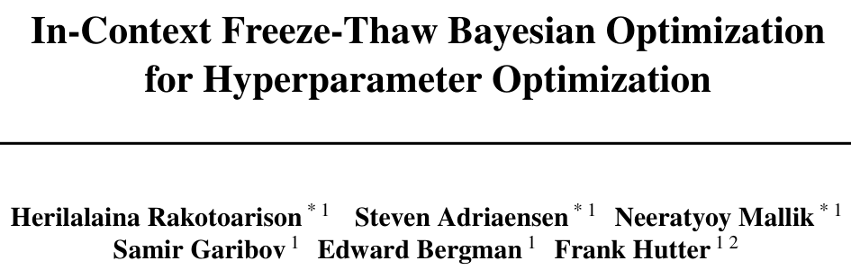
用学习曲线决定下一步训练谁
Rakotoarison、Adriaensen、Mallik、Garibov、Bergman、Hutter · ICML 2024
FT-PFN 负责预测，MFPI-random 负责分配下一步预算。本稿固定讲解2024年正式论文。
1. 问题与输入输出：何时暂停，何时继续。
2. 合成先验、Transformer、概率输出与逐步手算。
3. 预测质量、优化结果、消融与所有附录图表。
4. 研究迁移、失败边界、复现清单与末页摘要。
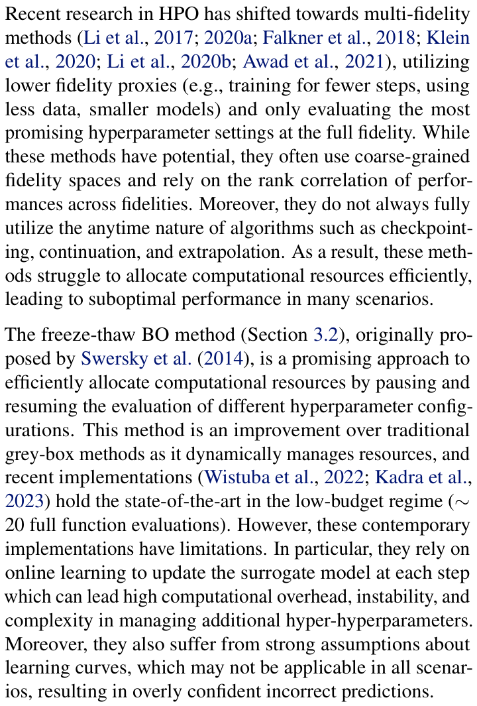
只看早期排名，可能丢掉后期反超的配置；把配置一次训满，又会消耗大量预算。
Freeze-thaw允许保存检查点、暂停某次训练，获得新信息后再继续。
原有方法每一步还要拟合代理模型。ifBO把这部分改成一次上下文推断。
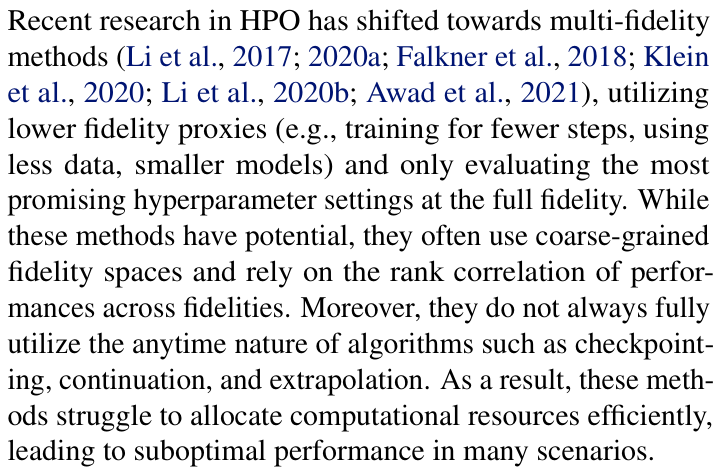
对应前面的讲解「一次完整训练太贵，粗粒度早停又可能错杀」（本版第3页，原198版第3页）。本页保留PDF第1页的原文顺序；相邻分段含重叠行，便于接续阅读。
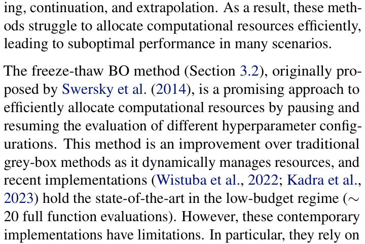
对应前面的讲解「一次完整训练太贵，粗粒度早停又可能错杀」（本版第3页，原198版第3页）。本页保留PDF第1页的原文顺序；相邻分段含重叠行，便于接续阅读。
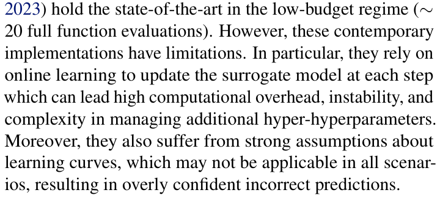
对应前面的讲解「一次完整训练太贵，粗粒度早停又可能错杀」（本版第3页，原198版第3页）。本页保留PDF第1页的原文顺序；相邻分段含重叠行，便于接续阅读。
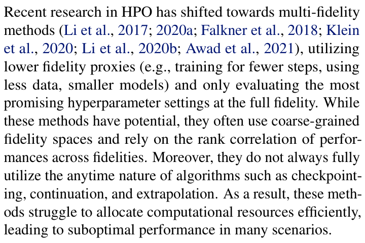
低保真代理包括少训练几步、少用一些数据或使用较小模型。它们减少单次评估成本。
粗粒度多保真调度依赖不同保真度之间的排名相关性；早期领先的配置未必在后期仍领先。
原文还指出，若不充分利用检查点、续训和外推，就可能分配过多预算给不值得继续的配置。
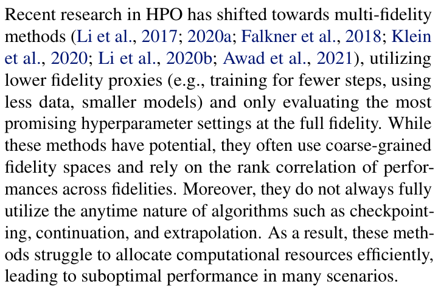
对应前面的讲解「动机原文放大：早期排名不是最终排名」（本版第7页，原198版第4页）。本页保留PDF第1页的原文顺序；相邻分段含重叠行，便于接续阅读。
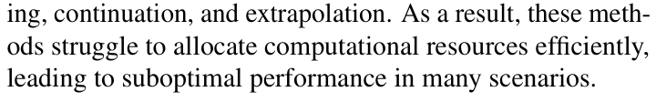
对应前面的讲解「动机原文放大：早期排名不是最终排名」（本版第7页，原198版第4页）。本页保留PDF第1页的原文顺序；相邻分段含重叠行，便于接续阅读。
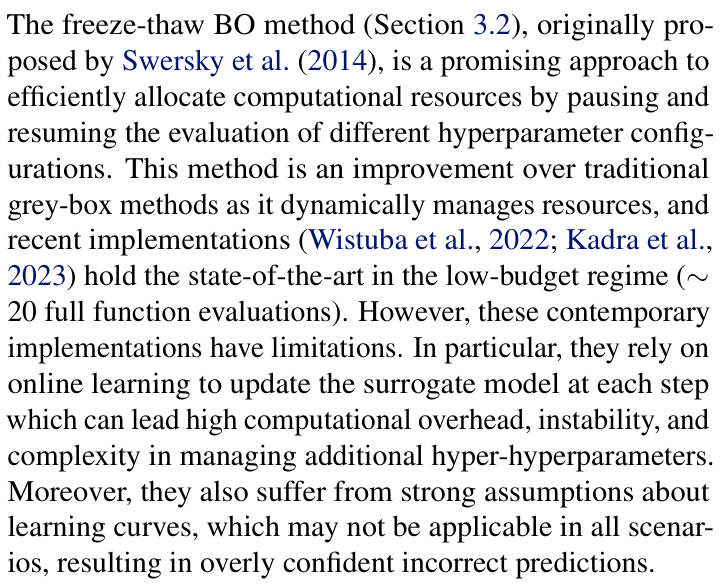
Freeze-thaw通过暂停和恢复不同配置的训练来分配资源。原文关注约20次完整训练的低预算情境。
既有实现每一步在线更新代理，带来计算开销、拟合不稳定，以及代理自身超参数的额外管理。
强学习曲线假设还可能给出过度自信的错误预测。这些是ifBO希望缓解的限制，不表示它消除了所有风险。
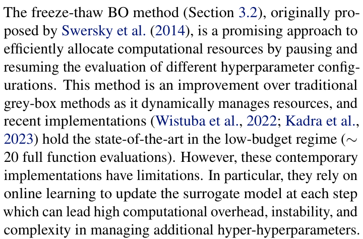
对应前面的讲解「动机原文放大：续训调度也有代理开销」（本版第10页，原198版第5页）。本页保留PDF第1页的原文顺序；相邻分段含重叠行，便于接续阅读。
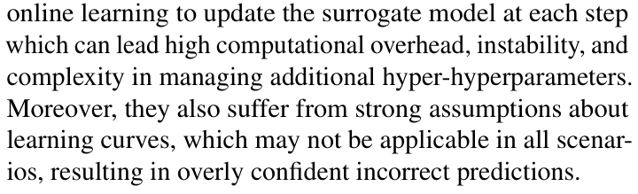
对应前面的讲解「动机原文放大：续训调度也有代理开销」（本版第10页，原198版第5页）。本页保留PDF第1页的原文顺序；相邻分段含重叠行，便于接续阅读。
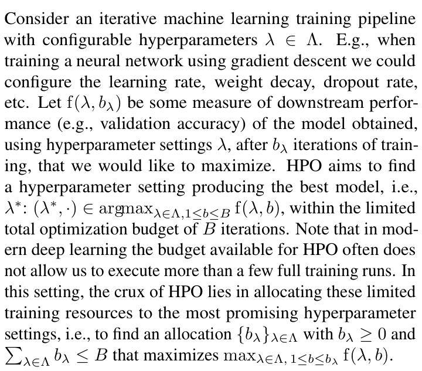
λ表示超参数向量，bλ是配置λ已训练步数，f(λ,b)是该步的性能。
历史H保存所有已见三元组(λ,b,y)。总预算B约束各配置累计训练步数之和。
最终返回所有已见检查点中性能最高的配置。允许最优检查点早于最终训练步。
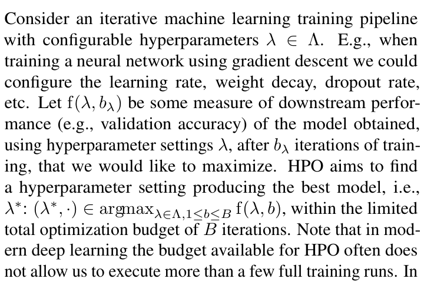
对应前面的讲解「输入是多条部分曲线，输出是下一个训练配置」（本版第13页，原198版第6页）。本页保留PDF第3页的原文顺序；相邻分段含重叠行，便于接续阅读。
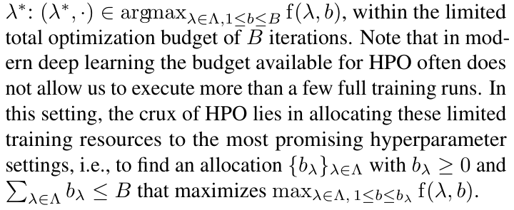
对应前面的讲解「输入是多条部分曲线，输出是下一个训练配置」（本版第13页，原198版第6页）。本页保留PDF第3页的原文顺序；相邻分段含重叠行，便于接续阅读。
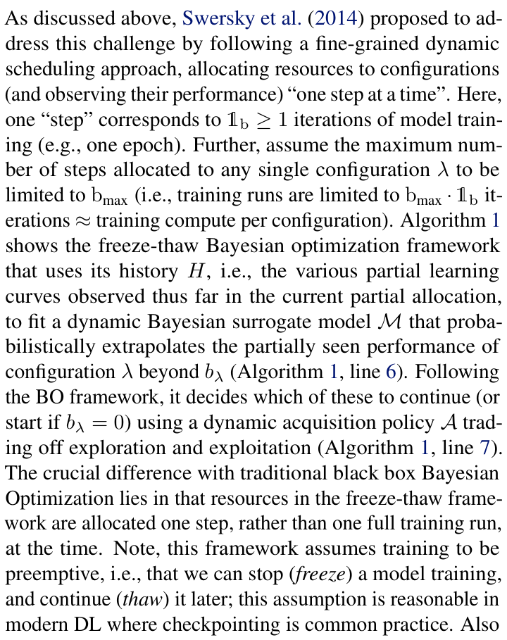
预测“再训练h步后有多好”，不等于立即支付h步成本。每轮实际只执行一个单位步。
模型权重、优化器状态、随机数状态及数据顺序需要可恢复，否则暂停后继续不等于原曲线。
论文在查表基准上模拟续训。真实系统还应记录检查点读写和重启耗时。
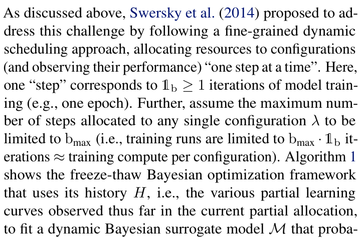
对应前面的讲解「可以续训是方法成立的操作条件」（本版第16页，原198版第7页）。本页保留PDF第3页的原文顺序；相邻分段含重叠行，便于接续阅读。
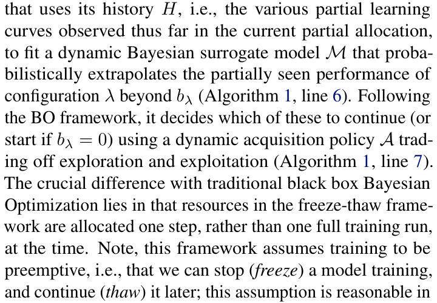
对应前面的讲解「可以续训是方法成立的操作条件」（本版第16页，原198版第7页）。本页保留PDF第3页的原文顺序；相邻分段含重叠行，便于接续阅读。
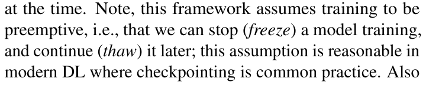
对应前面的讲解「可以续训是方法成立的操作条件」（本版第16页，原198版第7页）。本页保留PDF第3页的原文顺序；相邻分段含重叠行，便于接续阅读。
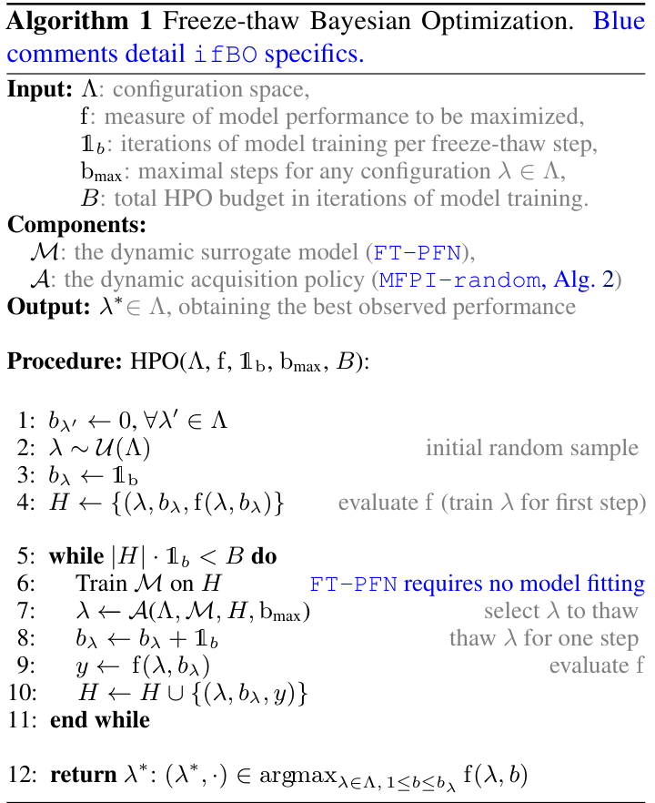
Λ是候选配置空间，bmax是单配置训练上限，B是总预算。
先随机选一个配置并观察第一步。之后计算采集函数，选出λ，更新bλ并读取新性能。
原算法第6行的拟合步骤对FT-PFN不执行。H随观测增长，但预训练参数保持固定。
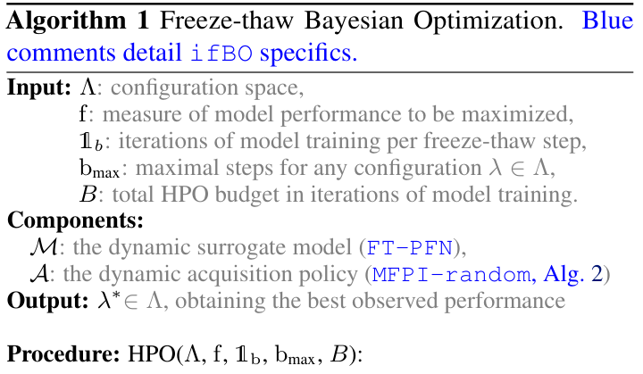
对应前面的讲解「算法1：一次初始化，反复分配一个单位步」（本版第20页，原198版第8页）。本页保留PDF第4页的原文顺序；相邻分段含重叠行，便于接续阅读。
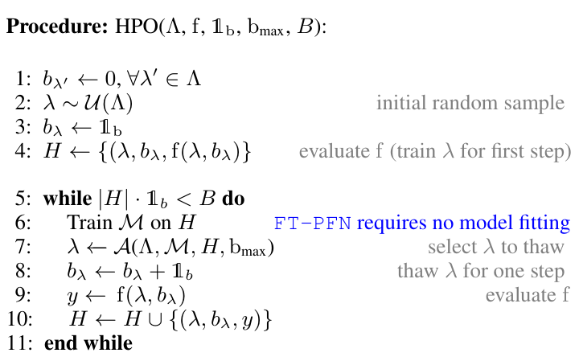
对应前面的讲解「算法1：一次初始化，反复分配一个单位步」（本版第20页，原198版第8页）。本页保留PDF第4页的原文顺序；相邻分段含重叠行，便于接续阅读。
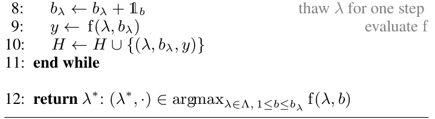
对应前面的讲解「算法1：一次初始化，反复分配一个单位步」（本版第20页，原198版第8页）。本页保留PDF第4页的原文顺序；相邻分段含重叠行，便于接续阅读。
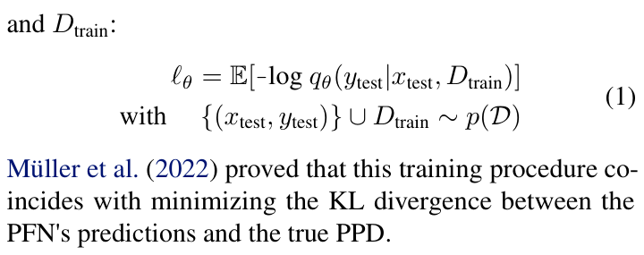
训练时从合成任务分布p(D)采样，把一部分观测作为上下文，保留另外的查询点作为监督。
损失为E[−log qθ(ytest | xtest,Dtrain)]。x在这里包含超参数λ与归一化时间t。
若训练数据服从该先验、模型容量和优化足够，交叉熵最优解逼近先验诱导的后验预测。真实任务先验失配仍会失败。
对应前面的讲解「PFN学习的是先验下的后验预测」（本版第24页，原198版第9页）。本页保留PDF第4页的原文顺序；相邻分段含重叠行，便于接续阅读。
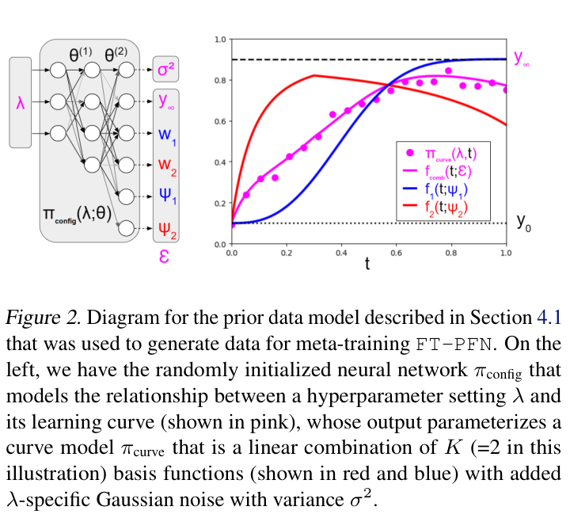
输入λ进入随机初始化的πconfig；输出是噪声强度及曲线参数。该网络在造合成任务时不做梯度训练。
πcurve用若干基础增长函数加权，并加高斯噪声，得到同一任务内的多条学习曲线。
图中为便于说明只画K=2；实际模型使用K=4。粉色是组合曲线，红蓝是基础函数。
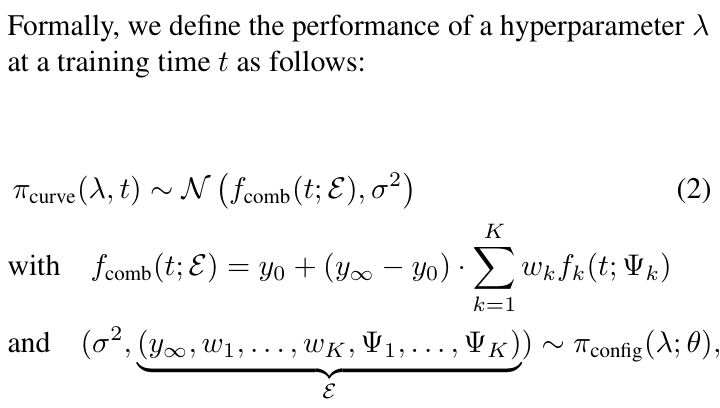
fcomb(t)=y0+(y∞−y0)∑wk fk(t;Ψk)。y0是任务共同起点，y∞、wk、Ψk随λ变化。
每个基础函数有4个参数，4个权重，再加y∞和σ²，共22个λ相关输出。
σ²描述观测噪声。加入高斯噪声后，观测裁剪到[0,1]；超参数也归一化至[0,1]。
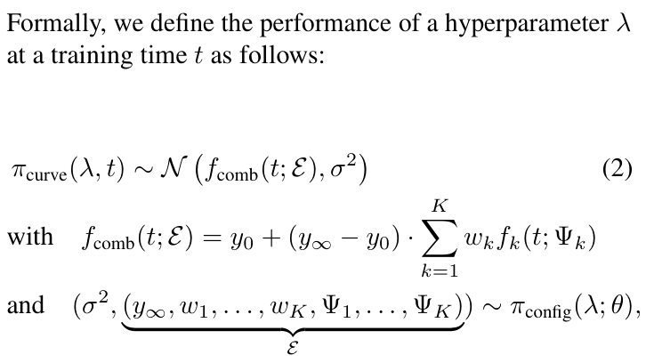
对应前面的讲解「式2：先决定均值，再采样有噪声的性能」（本版第27页，原198版第11页）。本页保留PDF第5页的原文顺序；相邻分段含重叠行，便于接续阅读。
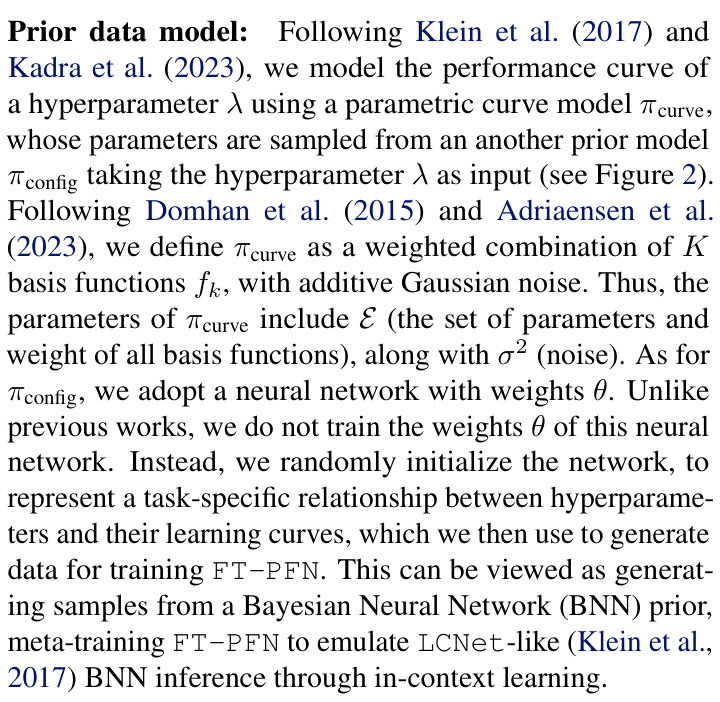
每个合成任务重新抽取网络结构和权重。该任务中不同λ共用同一πconfig，因此曲线并非互相独立。
相近λ经过同一连续映射时可能得到相近曲线参数。FT-PFN学习这种可迁移的配置与曲线关系。
这是先验设计，不保证真实超参数空间始终平滑。类别跳变、训练不稳定或任务迁移都可破坏关系。
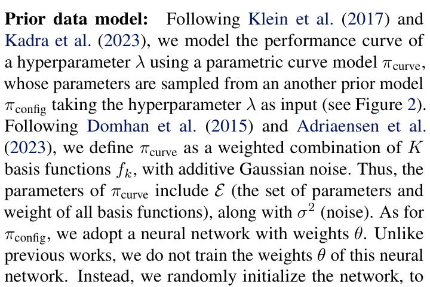
对应前面的讲解「共享随机网络让相近配置产生相关曲线」（本版第29页，原198版第12页）。本页保留PDF第5页的原文顺序；相邻分段含重叠行，便于接续阅读。
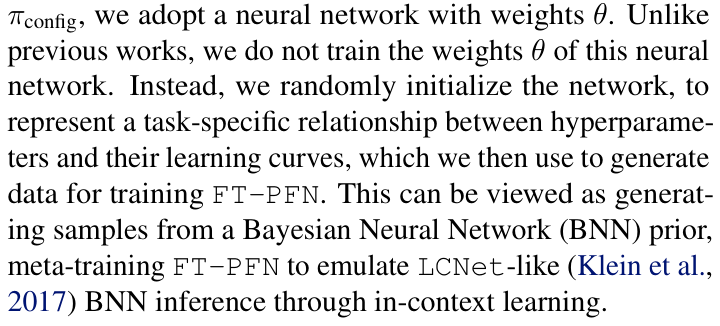
对应前面的讲解「共享随机网络让相近配置产生相关曲线」（本版第29页，原198版第12页）。本页保留PDF第5页的原文顺序；相邻分段含重叠行，便于接续阅读。
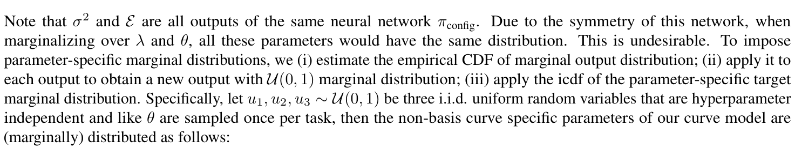
随机网络各输出维可能有相同边缘分布，但噪声、曲线形状与饱和值需要不同先验。
先估计输出的经验CDF，再映射为近似均匀变量，最后用目标分布逆CDF变换。
这一步保留配置间依赖，同时给不同参数指定各自的边缘分布。
对应前面的讲解「参数分布不能直接沿用随机网络的同分布输出」（本版第32页，原198版第13页）。本页保留PDF第13页的原文顺序；相邻分段含重叠行，便于接续阅读。
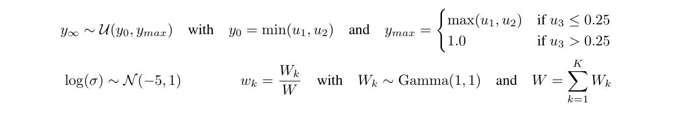
每个任务独立采样u1,u2,u3∼U(0,1)。y0=min(u1,u2)；若u3≤0.25，ymax=max(u1,u2)，否则ymax=1。
y∞从[y0,ymax]均匀采样；logσ服从N(−5,1)。
Wk服从Gamma(1,1)，再归一化wk=Wk/∑Wk。非负且总和为1，使组合曲线的尺度可控。
对应前面的讲解「任务起点、噪声和混合权重的采样规则」（本版第34页，原198版第14页）。本页保留PDF第13页的原文顺序；相邻分段含重叠行，便于接续阅读。
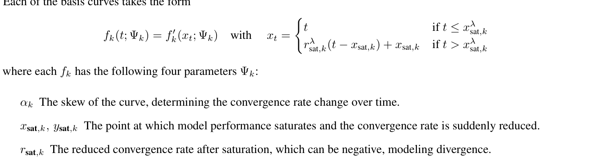
αk控制增长曲线形状，xsat,k表示转折时间，ysat,k表示该处性能。
转折前xt=t；之后xt=rsat,k(t−xsat,k)+xsat,k。rsat<0允许性能退化。
这比只允许单调增长的先验更适合过拟合或不稳定训练。论文用图7单独消融这一点。
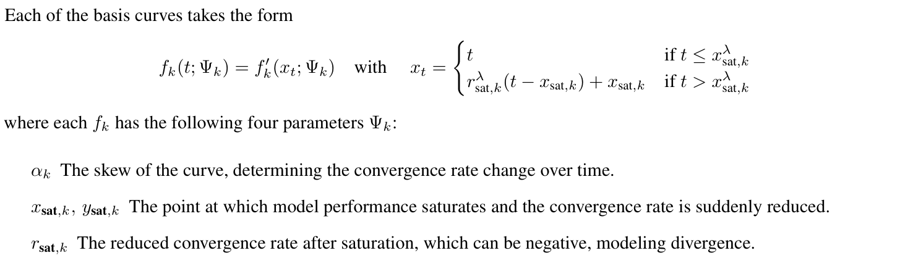
对应前面的讲解「饱和后可以停滞，也可以下降」（本版第36页，原198版第15页）。本页保留PDF第13页的原文顺序；相邻分段含重叠行，便于接续阅读。
幂函数增长，α控制接近饱和的形状。
原式完整保留在截图中。每行对应一个基础函数，四种函数一起组成式(2)，并非四个分别测试的模型。
共享先验：log10(xsat)∼N(0,1)，log10ε∼U(−3,0)，1−rsat∼Exp(1)。
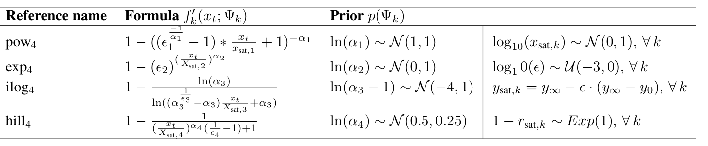
指数型增长；通过饱和时间与残余量ε确定尺度。
原式完整保留在截图中。每行对应一个基础函数，四种函数一起组成式(2)，并非四个分别测试的模型。
共享先验：log10(xsat)∼N(0,1)，log10ε∼U(−3,0)，1−rsat∼Exp(1)。

逆对数型增长，形状参数使用ln(α−1)先验。
原式完整保留在截图中。每行对应一个基础函数，四种函数一起组成式(2)，并非四个分别测试的模型。
共享先验：log10(xsat)∼N(0,1)，log10ε∼U(−3,0)，1−rsat∼Exp(1)。

Hill型增长，可呈现不同陡峭程度。
原式完整保留在截图中。每行对应一个基础函数，四种函数一起组成式(2)，并非四个分别测试的模型。
共享先验：log10(xsat)∼N(0,1)，log10ε∼U(−3,0)，1−rsat∼Exp(1)。
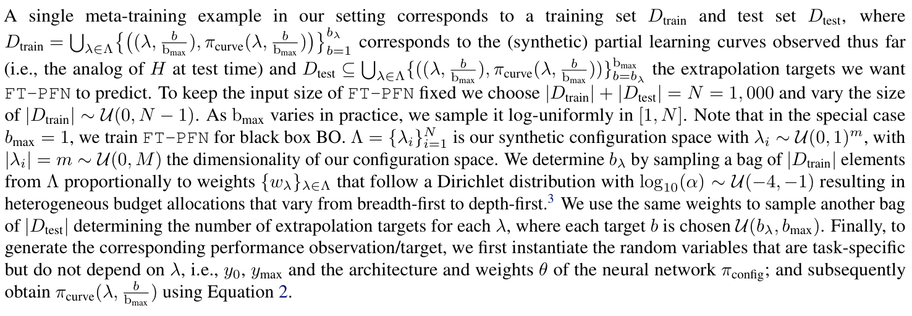
每个合成任务固定1000个上下文加查询点，随机选择上下文大小，并在[1,1000]对数均匀采样bmax。
配置维数不超过10。Dirichlet权重控制每个配置分到的观测数，可产生少数长曲线或很多短曲线。
查询时间从[bλ,bmax]均匀采样，允许等于已观察边界。同类采样方案也用于预测质量评估，不能误称所有真实调度历史都已覆盖。
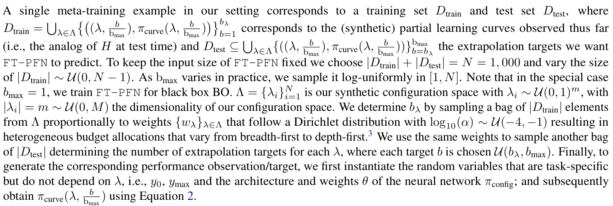
对应前面的讲解「合成上下文也覆盖“广搜”与“深训”」（本版第42页，原198版第20页）。本页保留PDF第15页的原文顺序；相邻分段含重叠行，便于接续阅读。
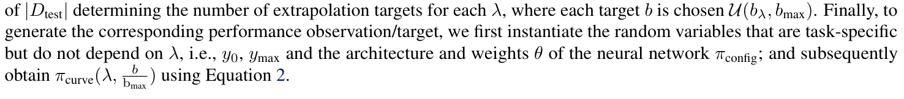
对应前面的讲解「合成上下文也覆盖“广搜”与“深训”」（本版第42页，原198版第20页）。本页保留PDF第15页的原文顺序；相邻分段含重叠行，便于接续阅读。
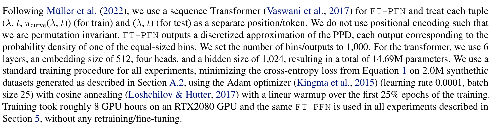
训练token为(λ,t,y)，查询token为(λ,t)。无位置编码，避免把输入排列顺序当任务信息。
6层、512维嵌入、4个注意力头、1024维隐藏层，共14.69M参数。
1000个等宽输出区间近似[0,1]上的预测分布。两百万合成数据集，Adam学习率10⁻⁴、批量25，余弦退火，前25%训练阶段线性warmup；约8个RTX2080 GPU小时。

对应前面的讲解「Transformer每个token是一条观测或查询」（本版第45页，原198版第21页）。本页保留PDF第15页的原文顺序；相邻分段含重叠行，便于接续阅读。
正式模型1000个区间；每个区间的质量由网络输出，区间内用常密度近似。
均值是各区间中点按概率质量加权。改进概率是阈值T右侧的概率质量，跨阈值的区间按长度折算。
密度可以大于1，因此表1的连续log-likelihood可以为正。它不是分类概率的对数。

对应前面的讲解「等宽概率区间怎样变成改进概率」（本版第47页，原198版第22页）。本页保留PDF第15页的原文顺序；相邻分段含重叠行，便于接续阅读。
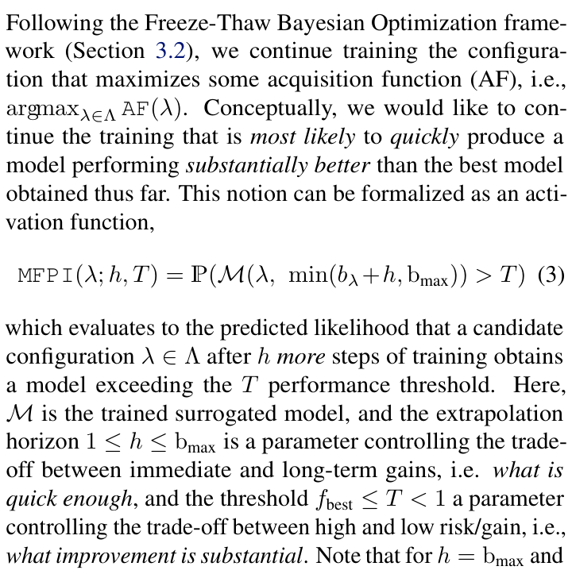
MFPI(λ;h,T)=P(M(λ,min(bλ+h,bmax))>T)。
h控制看多远；T控制要求多大提升。M输出的是未来性能分布，而非一个确定分数。
所有配置用同一轮的h和T比较，选最大概率者。即便h很大，算法1也只让它续训一步。
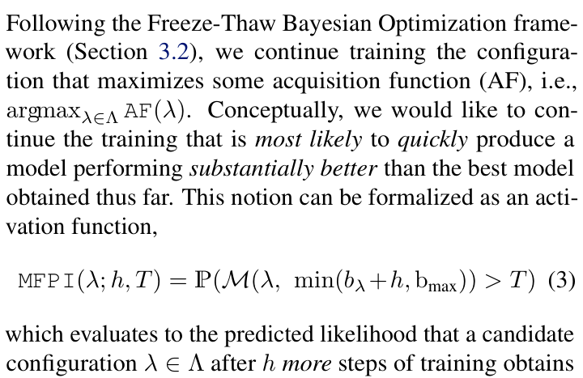
对应前面的讲解「式3：预测未来h步，但只执行下一步」（本版第49页，原198版第23页）。本页保留PDF第5页的原文顺序；相邻分段含重叠行，便于接续阅读。
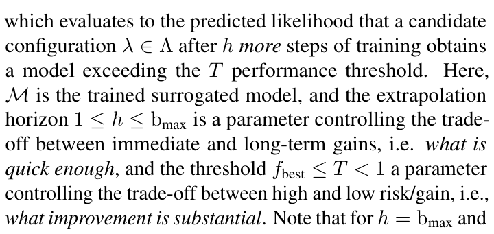
对应前面的讲解「式3：预测未来h步，但只执行下一步」（本版第49页，原198版第23页）。本页保留PDF第5页的原文顺序；相邻分段含重叠行，便于接续阅读。
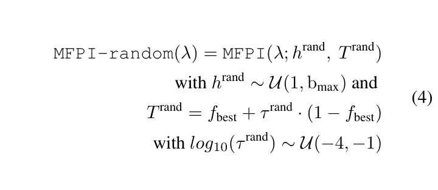
h从1到bmax的范围采样。log10τ从[−4,−1]均匀采样，所以τ取值约为0.0001至0.1。
T=fbest+τ(1−fbest)，在当前最好性能与1之间提出不同程度的提升要求。
随机化混合短期、长期及不同风险的决策。它不能消除先验失配，也不是全局最优调度保证。
对应前面的讲解「式4：每轮随机一个前瞻距离与提升门槛」（本版第52页，原198版第24页）。本页保留PDF第6页的原文顺序；相邻分段含重叠行，便于接续阅读。
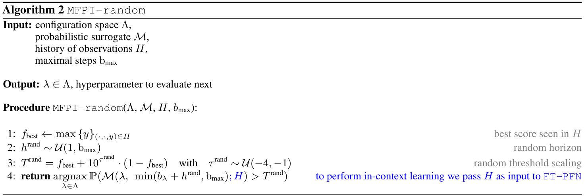
从H读取fbest，先采样h和τ，再计算每个候选的未来改进概率。
注意符号差异：式4把τ写成比例；算法2的τ是指数，阈值式中用10^τ。两者分布等价。
返回λ后由算法1实际训练并更新H。这里没有重新优化FT-PFN的θ。
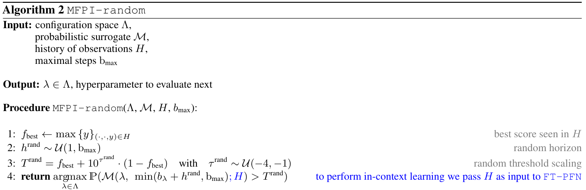
对应前面的讲解「算法2：同一h、T下比较所有候选」（本版第54页，原198版第25页）。本页保留PDF第16页的原文顺序；相邻分段含重叠行，便于接续阅读。
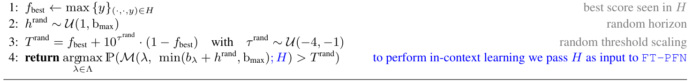
对应前面的讲解「算法2：同一h、T下比较所有候选」（本版第54页，原198版第25页）。本页保留PDF第16页的原文顺序；相邻分段含重叠行，便于接续阅读。
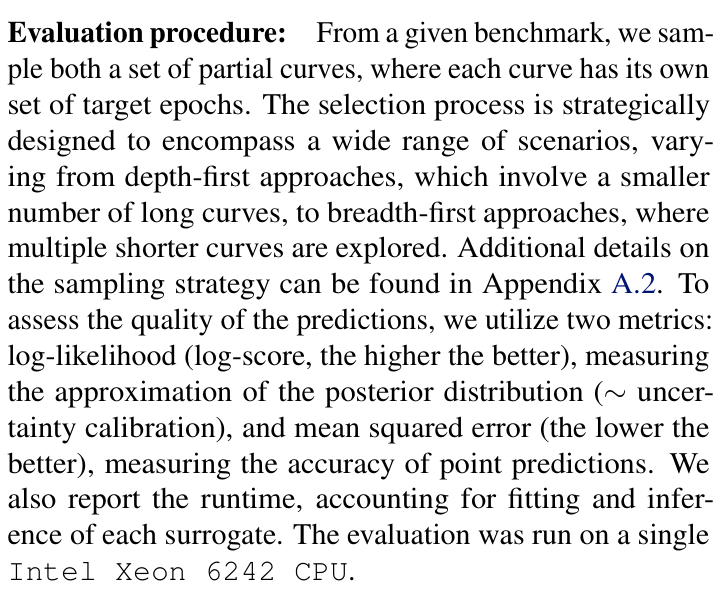
基于相同部分曲线与查询目标，比较FT-PFN、无超参数输入的FT-PFN、DyHPO、DPL。
log-likelihood越大越好，用来衡量概率预测；MSE越小越好，用来衡量点预测。两项不可互换。
运行时间包含每种代理拟合及推断，在单个Intel Xeon 6242 CPU上测量。表1按任务取中位数。
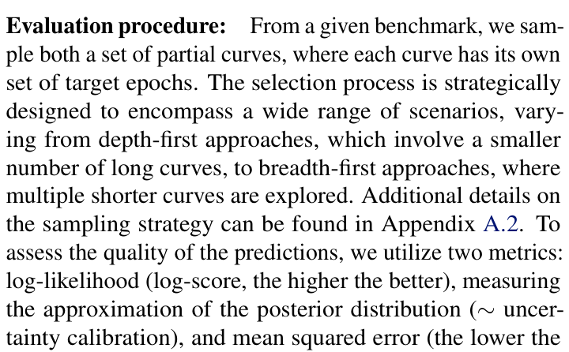
对应前面的讲解「实验问题一：代理预测是否准确且省时」（本版第57页，原198版第26页）。本页保留PDF第6页的原文顺序；相邻分段含重叠行，便于接续阅读。
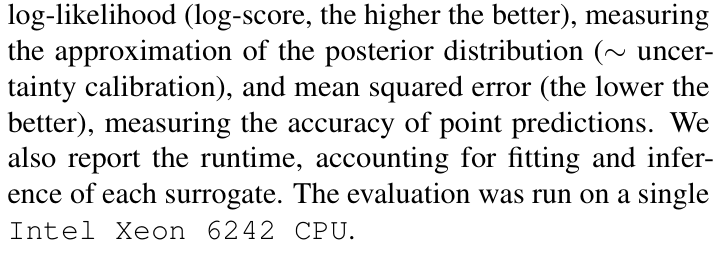
对应前面的讲解「实验问题一：代理预测是否准确且省时」（本版第57页，原198版第26页）。本页保留PDF第6页的原文顺序；相邻分段含重叠行，便于接续阅读。
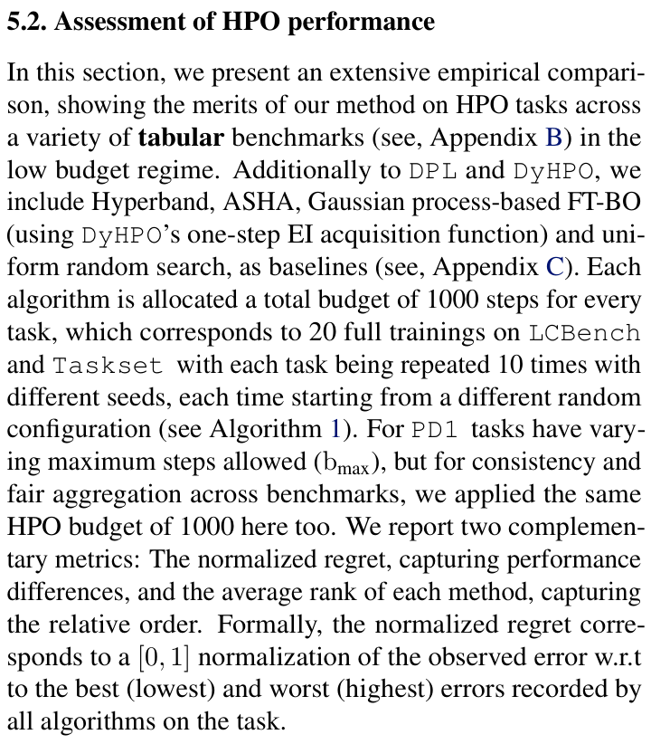
每个任务1000步，总计10个随机种子；LCBench与Taskset约相当于20次完整训练。PD1单次最大预算不同。
归一化后悔值把所有算法在该任务观测到的最低与最高误差映射到[0,1]。平均排名只表示相对顺序。
主图是有限候选集合上的查表HPO。不能直接断言在连续超参数空间或LLM预训练中同样获胜。
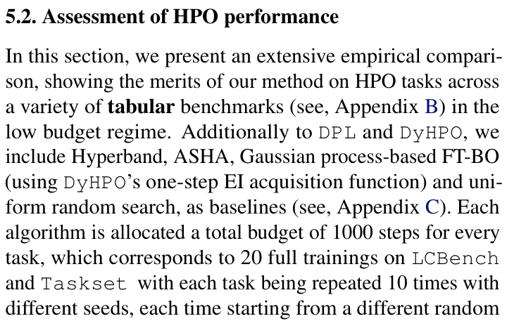
对应前面的讲解「实验问题二：有限预算下最终找到什么」（本版第60页，原198版第27页）。本页保留PDF第7页的原文顺序；相邻分段含重叠行，便于接续阅读。
对应前面的讲解「实验问题二：有限预算下最终找到什么」（本版第60页，原198版第27页）。本页保留PDF第7页的原文顺序；相邻分段含重叠行，便于接续阅读。
全部基准都是有限配置的查表数据。LCBench含35个任务，每任务1000个候选配置。
来自AutoPyTorch模型的整数/浮点超参数，原轨迹52个epoch，按原作者建议丢弃首个epoch。
预算统计以论文具体预处理为准。1000步对照不能理解为真实重训1000个模型。
对应前面的讲解「LCBench：35个任务，7个超参数」（本版第63页，原198版第28页）。本页保留PDF第16页的原文顺序；相邻分段含重叠行，便于接续阅读。
batch size 16–512、learning rate 10⁻⁴–0.1、max units 64–1024采用log尺度。
max dropout 0–1、momentum 0.1–0.99、num layers 1–5、weight decay 10⁻⁵–0.1。
表中weight decay未标log；复现需遵循原配置，不应凭习惯擅自补一个log变换。
选12个NLP任务，每个有4维、8维配置版本，总计24个任务。
log-loss无自然上界。作者用所有随机初始化配置在epoch0的损失中位数模拟可提供的上界。
NaN或超过上界的观测先截断，再给优化器。该预处理是结论的一部分，不能只说模型直接支持无界损失。
对应前面的讲解「Taskset：24个任务，保留发散曲线」（本版第66页，原198版第30页）。本页保留PDF第17页的原文顺序；相邻分段含重叠行，便于接续阅读。
对应前面的讲解「Taskset：24个任务，保留发散曲线」（本版第66页，原198版第30页）。本页保留PDF第17页的原文顺序；相邻分段含重叠行，便于接续阅读。
beta1∈[10⁻⁴,1]，beta2∈[10⁻³,1]。
epsilon∈[10⁻¹²,1000]，learning rate∈[10⁻⁹,10]。四个参数均使用log尺度。
这些区间非常宽，包含不稳定配置，保留发散和失败记录能检验调度是否浪费预算。
除表4四维，还包括exponential decay、l1、l2和linear decay，表中全部按log尺度。
范围分别为[9×10⁻⁷,10⁻⁴]、[10⁻⁹,10]、[10⁻⁹,10]、[10⁻⁸,10⁻⁴]。
原文把4维版本称为8维的“superset”，与表列参数数目相矛盾。本稿按4维/8维参数清单描述，不沿用该关系词。
任务包括图像分类、语言与翻译、蛋白序列建模；16个任务，完整轨迹长度5至1414步。
所有任务仍给1000步总预算，因此它不是统一的20次完整训练。
附录B称16个任务，但图15只有15个子图。本稿保留全部可见子图，不补造缺失的第16幅。
对应前面的讲解「PD1：16个任务，训练长度差异很大」（本版第71页，原198版第33页）。本页保留PDF第18页的原文顺序；相邻分段含重叠行，便于接续阅读。
lr decay factor∈[.01,.99]，lr power∈[.1,2]。
lr initial∈[10⁻⁵,10]与opt momentum∈[10⁻⁵,1]采用log尺度。
此处的PD1设置与其他PFN论文可能不同，不能混用PFNs4BO中的五维PD1表。
DyHPO、DPL均按各自论文与公开代码在作者的NePS框架中重实现。GP基线用Matérn5/2核、长度尺度1.0和单步EI。
共享框架便于固定预算、初始种子和采集策略，减少接口差异；仍不等于原仓库的所有设置逐位相同。
复现应固定ifBO仓库icml-2024分支，再核对具体配置文件。
对应前面的讲解「统一框架减少对照的实现差异」（本版第74页，原198版第35页）。本页保留PDF第19页的原文顺序；相邻分段含重叠行，便于接续阅读。
对应前面的讲解「统一框架减少对照的实现差异」（本版第74页，原198版第35页）。本页保留PDF第19页的原文顺序；相邻分段含重叠行，便于接续阅读。
随机搜索每次训到bmax。Hyperband使用η=3，ASHA同样使用η=3（附录C续）。
这些方法的资源分配粒度与freeze-thaw不同，因此主结果包含调度方式、代理预测和采集策略的共同作用。
将预测代理或采集函数固定后再比较，才能拆开来源。图4、9、10提供这样的消融。
对应前面的讲解「普通调度基线与freeze-thaw比较什么」（本版第77页，原198版第36页）。本页保留PDF第18页的原文顺序；相邻分段含重叠行，便于接续阅读。
原文报告：FT-PFN配EI(max)在LCBench与PD1表现差，配EI(one step)在PD1与Taskset表现差。
作者解释为不确定分布尾部拉高EI，低预算下探索过多而缺乏利用。这是解释假设，不是已证明的唯一原因。
因此“代理预测更准”不能自动推出“任意贝叶斯优化组合更好”。
对应前面的讲解「更准的分布配错采集函数也会失败」（本版第79页，原198版第37页）。本页保留PDF第8页的原文顺序；相邻分段含重叠行，便于接续阅读。
FT-PFN：LCBench log-score 1.876 / MSE .005，PD1 .925 / .030，Taskset 2.934 / .004。
PD1无HP版本.983 / .028更好，不能说加入超参数总会改善。时间.225秒，对DPL 17.686秒约78.6倍（由表值计算）。
四行模型与所有列均保留。log-score越大越好，MSE与时间越小越好；这些是任务中位数。
FT-PFN：LCBench 2.044 / .004，PD1 1.072 / .025，Taskset 2.975 / .004。
无HP版本在PD1仍略好：1.103 / .024。FT-PFN .541秒，DyHPO 64.809秒，约119.8倍（由表值计算），标题“10–100倍”为概括。
四行模型与所有列均保留。log-score越大越好，MSE与时间越小越好；这些是任务中位数。
FT-PFN：LCBench 2.118 / .004，PD1 1.133 / .024，Taskset 3.016 / .004。
PD1两种FT-PFN的MSE同为.024，FT-PFN与DPL在Taskset的MSE同为.004。概率评分仍明显不同。
四行模型与所有列均保留。log-score越大越好，MSE与时间越小越好；这些是任务中位数。
FT-PFN：LCBench 2.137 / .003，PD1 1.201 / .022，Taskset 3.042 / .004。
上下文超过训练范围仍有实证表现，但PD1无HP版本1.225 / .021更优。不能据此断言所有超训练长度都稳定。
四行模型与所有列均保留。log-score越大越好，MSE与时间越小越好；这些是任务中位数。
FT-PFN：LCBench 2.199 / .003，PD1 1.192 / .022，Taskset 3.057 / .004。
无HP版本PD1为1.251 / .019。FT-PFN耗时1.715秒，对DPL约42.8倍、对DyHPO约97.1倍（表值比率）。
四行模型与所有列均保留。log-score越大越好，MSE与时间越小越好；这些是任务中位数。
输入λ的每一维先按搜索空间归一化，时间用t=b/bmax。观测token还包含已见性能y，查询token不含未知y。
对数尺度参数应先取对数再归一化。数值的距离因此反映倍数变化，而不是原始绝对差。
论文给出token定义与模型尺寸，未逐项写出所有编码权重；下例只解释尺度，不能当成模型实测中间激活。

对应前面的讲解「输入编码：同一超参数先在统一尺度上表示」（本版第86页，原198版第43页）。本页保留PDF第15页的原文顺序；相邻分段含重叠行，便于接续阅读。
每层将token向量线性映射为查询Q、键K和值V；按softmax(QKᵀ/√d)计算权重，再对V加权汇总。
多个头给出不同汇总，后续线性层与前馈网络更新表示，最终预测性能区间。这个公式是Transformer教学展开。
FT-PFN论文仅规定采用序列Transformer与无位置编码；本页不把假设权重当作作者报告。
对应前面的讲解「注意力怎样把上下文汇总给查询」（本版第88页，原198版第44页）。本页保留PDF第15页的原文顺序；相邻分段含重叠行，便于接续阅读。
qθ把查询输入与已见数据作为条件，输出未知性能的预测分布。
离线更新θ使网络适应任务分布；在线更新的是上下文Dtrain。这两种“学习”发生在不同时间。
不确定度来自先验下仍可能解释观测的曲线。真实任务超出该先验时，概率也可能失准。
对应前面的讲解「后验预测目标与上下文条件」（本版第90页，原198版第45页）。本页保留PDF第4页的原文顺序；相邻分段含重叠行，便于接续阅读。
对应前面的讲解「后验预测目标与上下文条件」（本版第90页，原198版第45页）。本页保留PDF第4页的原文顺序；相邻分段含重叠行，便于接续阅读。
并集符号按λ遍历候选配置，每个配置包含从第1步到bmax步的性能。
这整个集合是一次元训练任务；抽取其中的部分点作为上下文，其他点作为外推查询。
两百万指合成任务数，1000指单任务上下文加查询点总数，不能混为一谈。
对应前面的讲解「一个合成任务包含多个配置的整组曲线」（本版第93页，原198版第46页）。本页保留PDF第4页的原文顺序；相邻分段含重叠行，便于接续阅读。
对应前面的讲解「一个合成任务包含多个配置的整组曲线」（本版第93页，原198版第46页）。本页保留PDF第4页的原文顺序；相邻分段含重叠行，便于接续阅读。
左侧从均值fcomb与噪声方差σ²构成观测分布，右侧给出四项加权和。
下方πconfig共同生成σ²与E，因此同一λ的曲线形状和噪声可有关联。
y0按任务采样而不随λ变化。加入噪声后的观测裁剪到[0,1]，与下游固定区间输出保持一致。
该图是三个代理模型的定性示例。FT-PFN无需在线重拟合；预测质量的定量证据见表1。
同一任务的真实学习曲线；圆点是所有模型共用的已观测上下文。
横轴：training budget b；纵轴：performance。
仅描述可见曲线关系；不从图像补造精确数值或显著性。
FT-PFN利用上下文直接外推后续性能，并给出不确定性。
横轴：training budget b；纵轴：performance。
仅描述可见曲线关系；不从图像补造精确数值或显著性。
DPL的幂律外推较集中；该示例中的末端预测可能偏离真实曲线。
横轴：training budget b；纵轴：performance。
仅描述可见曲线关系；不从图像补造精确数值或显著性。
DyHPO的外推呈现更宽的不确定区间；此单例不能代表所有任务。
横轴：training budget b；纵轴：performance。
仅描述可见曲线关系；不从图像补造精确数值或显著性。

FT-PFN末端预测分布与真实值星号一起展示。
横轴：model performance at b=50；纵轴：predicted distribution。
三个下排面板的纵轴量级不同，不能直接用峰高比较预测质量；星号为真值，不是预测均值。

DPL末端分布可见尖峰，部分峰与对应真实值分离。
横轴：model performance at b=50；纵轴：predicted distribution。
三个下排面板的纵轴量级不同，不能直接用峰高比较预测质量；星号为真值，不是预测均值。

DyHPO末端预测较分散，不能仅凭宽度判定其校准水平。
横轴：model performance at b=50；纵轴：predicted distribution。
三个下排面板的纵轴量级不同，不能直接用峰高比较预测质量；星号为真值，不是预测均值。
随机初始化的配置网络将超参数映射到曲线参数；基函数混合与噪声共同生成训练FT-PFN的合成曲线。
π_config随机初始化，不是在每个HPO任务上训练的代理模型。
本图为机制示意，不是实验结果。
示意图只画K=2；实际模型使用K=4。
红、蓝基函数混合成粉色均值，再加入配置相关高斯噪声。
横轴：normalized time t；纵轴：normalized performance。
实际先验总计22个配置相关输出参数，不能从K=2示意图推算模型大小。
每个任务采用1000步总预算与10个随机种子。ifBO在LCBench、Taskset汇总结果较好，在PD1与强基线接近。
ifBO在LCBench的汇总归一化遗憾随预算降低，后段低于所列基线。
横轴：Total epochs spent；纵轴：Normalized regret。
曲线为图中汇总结果；阴影或误差带的统计定义未在本文明确找到，不能写成95%置信区间或据此声称显著性。没有原始数表，不能从曲线读出精确效应量。
共享图例和完整子图位置见本图总览页。各方法颜色与原图保持一致。
PD1上ifBO与DPL、DyHPO接近，差距小于另两个基准族。
横轴：Total epochs spent；纵轴：Normalized regret。
曲线为图中汇总结果；阴影或误差带的统计定义未在本文明确找到，不能写成95%置信区间或据此声称显著性。没有原始数表，不能从曲线读出精确效应量。
共享图例和完整子图位置见本图总览页。各方法颜色与原图保持一致。
Taskset上ifBO后段遗憾低于DPL、DyHPO，传统调度基线更高。
横轴：Total epochs spent；纵轴：Normalized regret。
曲线为图中汇总结果；阴影或误差带的统计定义未在本文明确找到，不能写成95%置信区间或据此声称显著性。没有原始数表，不能从曲线读出精确效应量。
共享图例和完整子图位置见本图总览页。各方法颜色与原图保持一致。
ifBO在LCBench的平均秩后段最低；秩只反映相对次序。
横轴：Total epochs spent；纵轴：Rank。
曲线为图中汇总结果；阴影或误差带的统计定义未在本文明确找到，不能写成95%置信区间或据此声称显著性。没有原始数表，不能从曲线读出精确效应量。
共享图例和完整子图位置见本图总览页。各方法颜色与原图保持一致。
PD1上ifBO后段平均秩较低，但不能解释为每个任务都获胜。
横轴：Total epochs spent；纵轴：Rank。
曲线为图中汇总结果；阴影或误差带的统计定义未在本文明确找到，不能写成95%置信区间或据此声称显著性。没有原始数表，不能从曲线读出精确效应量。
共享图例和完整子图位置见本图总览页。各方法颜色与原图保持一致。
Taskset上ifBO后段平均秩下降，DPL和DyHPO随后。
横轴：Total epochs spent；纵轴：Rank。
曲线为图中汇总结果；阴影或误差带的统计定义未在本文明确找到，不能写成95%置信区间或据此声称显著性。没有原始数表，不能从曲线读出精确效应量。
共享图例和完整子图位置见本图总览页。各方法颜色与原图保持一致。
固定FT-PFN代理，替换采集函数。结果说明代理的预测质量不能单独决定HPO效果。
LCBench上MFPI-random后段遗憾较低，只有随机化部分参数的变体未稳定超过它。
横轴：Total epochs spent；纵轴：Normalized regret。
曲线为图中汇总结果；阴影或误差带的统计定义未在本文明确找到，不能写成95%置信区间或据此声称显著性。没有原始数表，不能从曲线读出精确效应量。
共享图例和完整子图位置见本图总览页。各方法颜色与原图保持一致。
PD1上多种采集函数接近，MFPI-random后段仍处于低遗憾组。
横轴：Total epochs spent；纵轴：Normalized regret。
曲线为图中汇总结果；阴影或误差带的统计定义未在本文明确找到，不能写成95%置信区间或据此声称显著性。没有原始数表，不能从曲线读出精确效应量。
共享图例和完整子图位置见本图总览页。各方法颜色与原图保持一致。
Taskset上one-step EI/PI明显偏高，长时域或随机化采集更合适。
横轴：Total epochs spent；纵轴：Normalized regret。
曲线为图中汇总结果；阴影或误差带的统计定义未在本文明确找到，不能写成95%置信区间或据此声称显著性。没有原始数表，不能从曲线读出精确效应量。
共享图例和完整子图位置见本图总览页。各方法颜色与原图保持一致。
LCBench上采集函数次序随预算变化；MFPI-random后段平均秩低。
横轴：Total epochs spent；纵轴：Rank。
曲线为图中汇总结果；阴影或误差带的统计定义未在本文明确找到，不能写成95%置信区间或据此声称显著性。没有原始数表，不能从曲线读出精确效应量。
共享图例和完整子图位置见本图总览页。各方法颜色与原图保持一致。
PD1上MFPI-random后段平均秩较低，早期排序并非固定。
横轴：Total epochs spent；纵轴：Rank。
曲线为图中汇总结果；阴影或误差带的统计定义未在本文明确找到，不能写成95%置信区间或据此声称显著性。没有原始数表，不能从曲线读出精确效应量。
共享图例和完整子图位置见本图总览页。各方法颜色与原图保持一致。
Taskset上one-step EI较差，MFPI-random与若干长时域变体接近。
横轴：Total epochs spent；纵轴：Rank。
曲线为图中汇总结果；阴影或误差带的统计定义未在本文明确找到，不能写成95%置信区间或据此声称显著性。没有原始数表，不能从曲线读出精确效应量。
共享图例和完整子图位置见本图总览页。各方法颜色与原图保持一致。
先验同时覆盖平台、配置相关性、噪声、交叉和后期下降；这些是合成训练分布的示例，不是21个真实HPO任务结果。
多数曲线在较高起点附近缓慢上升，配置间差异较小。
横轴：归一化训练时间；纵轴：归一化性能，均为0–1。颜色表示3个超参数的组合。
每个面板是一组同任务的合成学习曲线；21是独立任务样本数，不是21条曲线。颜色编码3个超参数，不能给每条线虚构算法名称。
曲线迅速上升后在不同水平收敛，少数在中途出现下降或折点。
横轴：归一化训练时间；纵轴：归一化性能，均为0–1。颜色表示3个超参数的组合。
每个面板是一组同任务的合成学习曲线；21是独立任务样本数，不是21条曲线。颜色编码3个超参数，不能给每条线虚构算法名称。
多数曲线有明显噪声，不同配置在多个性能层级分离。
横轴：归一化训练时间；纵轴：归一化性能，均为0–1。颜色表示3个超参数的组合。
每个面板是一组同任务的合成学习曲线；21是独立任务样本数，不是21条曲线。颜色编码3个超参数，不能给每条线虚构算法名称。
多条曲线在早期下降，随后形成低平台；也有持续波动的较高曲线。
横轴：归一化训练时间；纵轴：归一化性能，均为0–1。颜色表示3个超参数的组合。
每个面板是一组同任务的合成学习曲线；21是独立任务样本数，不是21条曲线。颜色编码3个超参数，不能给每条线虚构算法名称。
曲线起点接近，但部分配置在中后段突然下降，体现分歧和失稳。
横轴：归一化训练时间；纵轴：归一化性能，均为0–1。颜色表示3个超参数的组合。
每个面板是一组同任务的合成学习曲线；21是独立任务样本数，不是21条曲线。颜色编码3个超参数，不能给每条线虚构算法名称。
曲线几乎重叠并缓慢上升，配置相关性很强。
横轴：归一化训练时间；纵轴：归一化性能，均为0–1。颜色表示3个超参数的组合。
每个面板是一组同任务的合成学习曲线；21是独立任务样本数，不是21条曲线。颜色编码3个超参数，不能给每条线虚构算法名称。
各曲线早期迅速上升，再停留于不同平台，呈现共同形状与不同上限。
横轴：归一化训练时间；纵轴：归一化性能，均为0–1。颜色表示3个超参数的组合。
每个面板是一组同任务的合成学习曲线；21是独立任务样本数，不是21条曲线。颜色编码3个超参数，不能给每条线虚构算法名称。
曲线噪声较强且跨配置分层不明显，整体变化较小。
横轴：归一化训练时间；纵轴：归一化性能，均为0–1。颜色表示3个超参数的组合。
每个面板是一组同任务的合成学习曲线；21是独立任务样本数，不是21条曲线。颜色编码3个超参数，不能给每条线虚构算法名称。
曲线在不同性能带内波动，配置间最终表现差别较大。
横轴：归一化训练时间；纵轴：归一化性能，均为0–1。颜色表示3个超参数的组合。
每个面板是一组同任务的合成学习曲线；21是独立任务样本数，不是21条曲线。颜色编码3个超参数，不能给每条线虚构算法名称。
多数曲线接近低平台，个别曲线先跌落后稳定。
横轴：归一化训练时间；纵轴：归一化性能，均为0–1。颜色表示3个超参数的组合。
每个面板是一组同任务的合成学习曲线；21是独立任务样本数，不是21条曲线。颜色编码3个超参数，不能给每条线虚构算法名称。
不同曲线以不同速度上升，噪声与配置相关斜率同时可见。
横轴：归一化训练时间；纵轴：归一化性能，均为0–1。颜色表示3个超参数的组合。
每个面板是一组同任务的合成学习曲线；21是独立任务样本数，不是21条曲线。颜色编码3个超参数，不能给每条线虚构算法名称。
多数配置停留低水平，但一条曲线迅速上升后处于高平台。
横轴：归一化训练时间；纵轴：归一化性能，均为0–1。颜色表示3个超参数的组合。
每个面板是一组同任务的合成学习曲线；21是独立任务样本数，不是21条曲线。颜色编码3个超参数，不能给每条线虚构算法名称。
多数曲线在低平台附近，少数先高后低或发生突降。
横轴：归一化训练时间；纵轴：归一化性能，均为0–1。颜色表示3个超参数的组合。
每个面板是一组同任务的合成学习曲线；21是独立任务样本数，不是21条曲线。颜色编码3个超参数，不能给每条线虚构算法名称。
曲线高度重叠，快速上升后趋于共同平台。
横轴：归一化训练时间；纵轴：归一化性能，均为0–1。颜色表示3个超参数的组合。
每个面板是一组同任务的合成学习曲线；21是独立任务样本数，不是21条曲线。颜色编码3个超参数，不能给每条线虚构算法名称。
曲线共享上升趋势，最终水平相近但略有差异。
横轴：归一化训练时间；纵轴：归一化性能，均为0–1。颜色表示3个超参数的组合。
每个面板是一组同任务的合成学习曲线；21是独立任务样本数，不是21条曲线。颜色编码3个超参数，不能给每条线虚构算法名称。
多数曲线低且接近平坦，少数强噪声曲线发生明显下降。
横轴：归一化训练时间；纵轴：归一化性能，均为0–1。颜色表示3个超参数的组合。
每个面板是一组同任务的合成学习曲线；21是独立任务样本数，不是21条曲线。颜色编码3个超参数，不能给每条线虚构算法名称。
曲线在低到中等性能区间波动，部分配置有突降。
横轴：归一化训练时间；纵轴：归一化性能，均为0–1。颜色表示3个超参数的组合。
每个面板是一组同任务的合成学习曲线；21是独立任务样本数，不是21条曲线。颜色编码3个超参数，不能给每条线虚构算法名称。
曲线以较高水平起步，部分平滑，部分噪声较强。
横轴：归一化训练时间；纵轴：归一化性能，均为0–1。颜色表示3个超参数的组合。
每个面板是一组同任务的合成学习曲线；21是独立任务样本数，不是21条曲线。颜色编码3个超参数，不能给每条线虚构算法名称。
多条曲线早期接近高平台，中后期逐渐下滑，体现发散形状。
横轴：归一化训练时间；纵轴：归一化性能，均为0–1。颜色表示3个超参数的组合。
每个面板是一组同任务的合成学习曲线；21是独立任务样本数，不是21条曲线。颜色编码3个超参数，不能给每条线虚构算法名称。
一组曲线早期上升后回落，另一些一直停留于低平台。
横轴：归一化训练时间；纵轴：归一化性能，均为0–1。颜色表示3个超参数的组合。
每个面板是一组同任务的合成学习曲线；21是独立任务样本数，不是21条曲线。颜色编码3个超参数，不能给每条线虚构算法名称。
不同配置在早期抬升到不同水平，随后分层或缓慢回落。
横轴：归一化训练时间；纵轴：归一化性能，均为0–1。颜色表示3个超参数的组合。
每个面板是一组同任务的合成学习曲线；21是独立任务样本数，不是21条曲线。颜色编码3个超参数，不能给每条线虚构算法名称。
左图给出局部观测和外推，右图把不同(h,T)对应的选择画成颜色分区。均匀抽样是在指定坐标尺度下进行，因此颜色面积对应选择概率。
已经表现好的曲线与潜在上限较高的曲线，在不同时间尺度下都可能被继续。
横轴：training budget；纵轴：performance。
图为示例，无汇总成功率；预测带覆盖率未定义。
阈值与时域改变时，胜出配置改变；亮红色代表启动一条新曲线。
横轴：horizon；纵轴：threshold。
颜色面积只在图中对应的采样尺度下代表选择概率，不能当作原始线性T坐标的面积。
在训练先验中加入可能下降的曲线后，预测log-likelihood的相对秩和HPO遗憾的相对秩整体更好。
随上下文变大，包含发散曲线的模型平均秩进一步降低。
横轴：context size；纵轴：Rank (log-likelihood)。
曲线为图中汇总结果；阴影或误差带的统计定义未在本文明确找到，不能写成95%置信区间或据此声称显著性。没有原始数表，不能从曲线读出精确效应量。
共享图例和完整子图位置见本图总览页。各方法颜色与原图保持一致。
HPO约200步以后，包含发散曲线的版本平均秩较低；早期差距不稳定。
横轴：Steps；纵轴：Rank (HPO regret)。
曲线为图中汇总结果；阴影或误差带的统计定义未在本文明确找到，不能写成95%置信区间或据此声称显著性。没有原始数表，不能从曲线读出精确效应量。
共享图例和完整子图位置见本图总览页。各方法颜色与原图保持一致。
配对平均秩将ifBO与DyHPO、DPL分别比较，再比较三者。后段ifBO平均秩较低。
ifBO在所示预算范围内平均秩低于DyHPO。
横轴：Steps；纵轴：Rank (HPO regret)。
曲线为图中汇总结果；阴影或误差带的统计定义未在本文明确找到，不能写成95%置信区间或据此声称显著性。没有原始数表，不能从曲线读出精确效应量。
ifBO相对DPL的优势在早期之后形成；不是从第一步起都占优。
横轴：Steps；纵轴：Rank (HPO regret)。
曲线为图中汇总结果；阴影或误差带的统计定义未在本文明确找到，不能写成95%置信区间或据此声称显著性。没有原始数表，不能从曲线读出精确效应量。
三方法合并比较，ifBO后段处于最低平均秩。
横轴：Steps；纵轴：Rank (HPO regret)。
曲线为图中汇总结果；阴影或误差带的统计定义未在本文明确找到，不能写成95%置信区间或据此声称显著性。没有原始数表，不能从曲线读出精确效应量。
随机化不能脱离代理的外推能力单独评价。ifBO与DPL受益，DyHPO仍最适合其单步设置。
ifBO配合随机时域与随机阈值，后段平均秩较低。
横轴：Steps；纵轴：Average Rank (HPO regret)。
曲线为图中汇总结果；阴影或误差带的统计定义未在本文明确找到，不能写成95%置信区间或据此声称显著性。没有原始数表，不能从曲线读出精确效应量。
共享图例和完整子图位置见本图总览页。各方法颜色与原图保持一致。
DPL早期受益于双随机化，后期与固定最大时域等变体的差距收窄。
横轴：Steps；纵轴：Average Rank (HPO regret)。
曲线为图中汇总结果；阴影或误差带的统计定义未在本文明确找到，不能写成95%置信区间或据此声称显著性。没有原始数表，不能从曲线读出精确效应量。
共享图例和完整子图位置见本图总览页。各方法颜色与原图保持一致。
DyHPO的one-step变体明显较低；长时域并非对所有代理都有利。
横轴：Steps；纵轴：Average Rank (HPO regret)。
曲线为图中汇总结果；阴影或误差带的统计定义未在本文明确找到，不能写成95%置信区间或据此声称显著性。没有原始数表，不能从曲线读出精确效应量。
共享图例和完整子图位置见本图总览页。各方法颜色与原图保持一致。
所有代理使用同一MFPI-random后，ifBO仍有较低平均秩，支持代理本身对总体表现有贡献。
共享采集后ifBO相对DyHPO仍较低。
横轴：Steps；纵轴：Rank (HPO regret)。
曲线为图中汇总结果；阴影或误差带的统计定义未在本文明确找到，不能写成95%置信区间或据此声称显著性。没有原始数表，不能从曲线读出精确效应量。
共享采集后ifBO在早期之后平均秩低于DPL。
横轴：Steps；纵轴：Rank (HPO regret)。
曲线为图中汇总结果；阴影或误差带的统计定义未在本文明确找到，不能写成95%置信区间或据此声称显著性。没有原始数表，不能从曲线读出精确效应量。
三者使用相同采集函数时，ifBO后段平均秩最低。
横轴：Steps；纵轴：Rank (HPO regret)。
曲线为图中汇总结果；阴影或误差带的统计定义未在本文明确找到，不能写成95%置信区间或据此声称显著性。没有原始数表，不能从曲线读出精确效应量。
把预算轴改为基准记录的累计训练时间后，ifBO总体仍较低；Taskset早期存在DPL领先。
LCBench上ifBO在大部分图示时间段平均秩低于两基线。
横轴：Wallclock time (in s)；纵轴：Rank。
横轴累加基准提供的每步训练成本；文中未明确包含优化器在线开销、暂停恢复开销或真实并行调度时间。曲线为图中汇总结果；阴影或误差带的统计定义未在本文明确找到，不能写成95%置信区间或据此声称显著性。没有原始数表，不能从曲线读出精确效应量。
共享图例和完整子图位置见本图总览页。各方法颜色与原图保持一致。
PD1上ifBO大部分时间平均秩较低，后期与DyHPO差距收窄。
横轴：Wallclock time (in s)；纵轴：Rank。
横轴累加基准提供的每步训练成本；文中未明确包含优化器在线开销、暂停恢复开销或真实并行调度时间。曲线为图中汇总结果；阴影或误差带的统计定义未在本文明确找到，不能写成95%置信区间或据此声称显著性。没有原始数表，不能从曲线读出精确效应量。
共享图例和完整子图位置见本图总览页。各方法颜色与原图保持一致。
Taskset上DPL早期更好，ifBO在更多时间预算后改善。
横轴：Wallclock time (in s)；纵轴：Rank。
横轴累加基准提供的每步训练成本；文中未明确包含优化器在线开销、暂停恢复开销或真实并行调度时间。曲线为图中汇总结果；阴影或误差带的统计定义未在本文明确找到，不能写成95%置信区间或据此声称显著性。没有原始数表，不能从曲线读出精确效应量。
共享图例和完整子图位置见本图总览页。各方法颜色与原图保持一致。
全部基准汇总后，ifBO大部分时间平均秩较低。
横轴：Wallclock time (in s)；纵轴：Rank。
横轴累加基准提供的每步训练成本；文中未明确包含优化器在线开销、暂停恢复开销或真实并行调度时间。曲线为图中汇总结果；阴影或误差带的统计定义未在本文明确找到，不能写成95%置信区间或据此声称显著性。没有原始数表，不能从曲线读出精确效应量。
共享图例和完整子图位置见本图总览页。各方法颜色与原图保持一致。
正文§5.3将PI(random horizon)写成T=0；附录D.3称阈值取当前最好观测。两种写法不等价。
本稿保留图4原始图例和曲线，不替作者确定哪段文字准确。精确复现应检查icml-2024实验配置。
式4与算法2的τ符号也不同，前者是比例，后者是以10为底的指数；本稿已经逐步说明转换。
对应前面的讲解「原文口径差异：随机时域的固定阈值」（本版第167页，原198版第118页）。本页保留PDF第7页的原文顺序；相邻分段含重叠行，便于接续阅读。
对应前面的讲解「原文口径差异：随机时域的固定阈值」（本版第167页，原198版第118页）。本页保留PDF第7页的原文顺序；相邻分段含重叠行，便于接续阅读。
附录写random horizon的阈值设为当前最佳观测，与正文§5.3的T=0不同。
这里展示对应原文截图，保留冲突，不用流畅改写掩盖复现不确定性。
图9显示随机化能帮助长程外推的代理，而DyHPO仍更适合单步预测；不能把随机策略当成与代理无关的万能改进。
对应前面的讲解「附录D.3给出了不同的阈值说明」（本版第170页，原198版第119页）。本页保留PDF第20页的原文顺序；相邻分段含重叠行，便于接续阅读。
lcbench-tabular-adult-balanced
各方法早期下降较快；ifBO、DPL与DyHPO的后期曲线靠近下缘，随机搜索与ASHA较高。
横轴：累计训练epoch（0–1000）。纵轴：归一化后悔值，对数尺度，越低越好。
图线为10种子均值；论文未给阴影置信水平。只作可见趋势比较，不由截图反推精确值或显著性。
lcbench-tabular-airlines-balanced
DPL后期曲线低于ifBO；ifBO、DyHPO与Freeze-Thaw的后期差距较小，随机搜索较高。
横轴：累计训练epoch（0–1000）。纵轴：归一化后悔值，对数尺度，越低越好。
图线为10种子均值；论文未给阴影置信水平。只作可见趋势比较，不由截图反推精确值或显著性。
lcbench-tabular-albert-balanced
ifBO、DyHPO与Freeze-Thaw较早接近低位；DPL随后下降并靠近这些曲线。
横轴：累计训练epoch（0–1000）。纵轴：归一化后悔值，对数尺度，越低越好。
图线为10种子均值；论文未给阴影置信水平。只作可见趋势比较，不由截图反推精确值或显著性。
lcbench-tabular-Amazon-balanced
ifBO与DPL在中后期持续下降，后期曲线低于DyHPO及其余基线。
横轴：累计训练epoch（0–1000）。纵轴：归一化后悔值，对数尺度，越低越好。
图线为10种子均值；论文未给阴影置信水平。只作可见趋势比较，不由截图反推精确值或显著性。
lcbench-tabular-APSFailure-balanced
ifBO、DPL与DyHPO后期接近；Freeze-Thaw停在略高的平台，随机搜索较高。
横轴：累计训练epoch（0–1000）。纵轴：归一化后悔值，对数尺度，越低越好。
图线为10种子均值；论文未给阴影置信水平。只作可见趋势比较，不由截图反推精确值或显著性。
lcbench-tabular-Australian-balanced
各方法早期明显下降；ifBO、DPL与DyHPO后期靠近低位，随机搜索较晚出现阶梯下降。
横轴：累计训练epoch（0–1000）。纵轴：归一化后悔值，对数尺度，越低越好。
图线为10种子均值；论文未给阴影置信水平。只作可见趋势比较，不由截图反推精确值或显著性。
lcbench-tabular-bank-balanced
ifBO与DPL较早接近低位；DyHPO和Freeze-Thaw随后靠近，随机搜索与ASHA仍较高。
横轴：累计训练epoch（0–1000）。纵轴：归一化后悔值，对数尺度，越低越好。
图线为10种子均值；论文未给阴影置信水平。只作可见趋势比较，不由截图反推精确值或显著性。
lcbench-tabular-blood-balanced
方法间的后期曲线较接近，ifBO位于低位曲线群；随机搜索保持略高的平台。
横轴：累计训练epoch（0–1000）。纵轴：归一化后悔值，对数尺度，越低越好。
图线为10种子均值；论文未给阴影置信水平。只作可见趋势比较，不由截图反推精确值或显著性。
lcbench-tabular-car-balanced
ifBO后期继续下降，末端曲线低于DPL与DyHPO；随机搜索和ASHA较高。
横轴：累计训练epoch（0–1000）。纵轴：归一化后悔值，对数尺度，越低越好。
图线为10种子均值；论文未给阴影置信水平。只作可见趋势比较，不由截图反推精确值或显著性。
lcbench-tabular-christine-balanced
ifBO与DPL后期靠近低位；Freeze-Thaw的平台高于其余自适应方法。
横轴：累计训练epoch（0–1000）。纵轴：归一化后悔值，对数尺度，越低越好。
图线为10种子均值；论文未给阴影置信水平。只作可见趋势比较，不由截图反推精确值或显著性。
lcbench-tabular-cnae-balanced
ifBO、DyHPO与DPL后期靠近低位；随机搜索和ASHA的下降较慢。
横轴：累计训练epoch（0–1000）。纵轴：归一化后悔值，对数尺度，越低越好。
图线为10种子均值；论文未给阴影置信水平。只作可见趋势比较，不由截图反推精确值或显著性。
lcbench-tabular-connect-balanced
ifBO早期下降较快并先接近低位；DPL后期追近，DyHPO在较高位置进入平台。
横轴：累计训练epoch（0–1000）。纵轴：归一化后悔值，对数尺度，越低越好。
图线为10种子均值；论文未给阴影置信水平。只作可见趋势比较，不由截图反推精确值或显著性。
lcbench-tabular-covertype-balanced
ifBO、DyHPO与Freeze-Thaw后期接近低位；DPL仍略高，HyperBand与ASHA明显更高。
横轴：累计训练epoch（0–1000）。纵轴：归一化后悔值，对数尺度，越低越好。
图线为10种子均值；论文未给阴影置信水平。只作可见趋势比较，不由截图反推精确值或显著性。
lcbench-tabular-credit-balanced
ifBO与DPL后期接近低位，其余方法依次停在更高的平台。
横轴：累计训练epoch（0–1000）。纵轴：归一化后悔值，对数尺度，越低越好。
图线为10种子均值；论文未给阴影置信水平。只作可见趋势比较，不由截图反推精确值或显著性。
lcbench-tabular-dionis-balanced
ifBO较早接近低位；DPL和Freeze-Thaw随后追近，HyperBand与ASHA保持较高曲线。
横轴：累计训练epoch（0–1000）。纵轴：归一化后悔值，对数尺度，越低越好。
图线为10种子均值；论文未给阴影置信水平。只作可见趋势比较，不由截图反推精确值或显著性。
lcbench-tabular-fabert-balanced
各方法很快下降后聚集在相近的窄范围内，后期可见差异很小。
横轴：累计训练epoch（0–1000）。纵轴：归一化后悔值，对数尺度，越低越好。
图线为10种子均值；论文未给阴影置信水平。只作可见趋势比较，不由截图反推精确值或显著性。
lcbench-tabular-Fashion-balanced
DyHPO在中期较早到达低位；ifBO、DPL与Freeze-Thaw后期靠近。
横轴：累计训练epoch（0–1000）。纵轴：归一化后悔值，对数尺度，越低越好。
图线为10种子均值；论文未给阴影置信水平。只作可见趋势比较，不由截图反推精确值或显著性。
lcbench-tabular-helena-balanced
ifBO后期曲线低于DPL、DyHPO和Freeze-Thaw；随机搜索与ASHA较高。
横轴：累计训练epoch（0–1000）。纵轴：归一化后悔值，对数尺度，越低越好。
图线为10种子均值；论文未给阴影置信水平。只作可见趋势比较，不由截图反推精确值或显著性。
lcbench-tabular-higgs-balanced
ifBO早期下降较快；其他自适应方法后期逐渐靠近其低位曲线。
横轴：累计训练epoch（0–1000）。纵轴：归一化后悔值，对数尺度，越低越好。
图线为10种子均值；论文未给阴影置信水平。只作可见趋势比较，不由截图反推精确值或显著性。
lcbench-tabular-jannis-balanced
ifBO、DPL、DyHPO与Freeze-Thaw后期靠近；HyperBand与ASHA停在更高位置。
横轴：累计训练epoch（0–1000）。纵轴：归一化后悔值，对数尺度，越低越好。
图线为10种子均值；论文未给阴影置信水平。只作可见趋势比较，不由截图反推精确值或显著性。
lcbench-tabular-jasmine-balanced
多种方法早期下降后很快进入平台；ifBO与DPL在低位，随机搜索和ASHA较高。
横轴：累计训练epoch（0–1000）。纵轴：归一化后悔值，对数尺度，越低越好。
图线为10种子均值；论文未给阴影置信水平。只作可见趋势比较，不由截图反推精确值或显著性。
lcbench-tabular-jungle-balanced
DyHPO与DPL早期下降较快，Freeze-Thaw稍后出现明显下降；这些方法与ifBO最终接近。
横轴：累计训练epoch（0–1000）。纵轴：归一化后悔值，对数尺度，越低越好。
图线为10种子均值；论文未给阴影置信水平。只作可见趋势比较，不由截图反推精确值或显著性。
lcbench-tabular-kc1-balanced
ifBO与DPL较早进入低位平台，随机搜索后期仍较高；整体曲线差距较小。
横轴：累计训练epoch（0–1000）。纵轴：归一化后悔值，对数尺度，越低越好。
图线为10种子均值；论文未给阴影置信水平。只作可见趋势比较，不由截图反推精确值或显著性。
lcbench-tabular-KDDCup09-balanced
ifBO与DPL后期靠近低位；DyHPO和Freeze-Thaw随后接近，随机搜索较高。
横轴：累计训练epoch（0–1000）。纵轴：归一化后悔值，对数尺度，越低越好。
图线为10种子均值；论文未给阴影置信水平。只作可见趋势比较，不由截图反推精确值或显著性。
lcbench-tabular-kr-balanced
ifBO在后期继续阶梯下降，末端低于DPL、DyHPO和Freeze-Thaw。
横轴：累计训练epoch（0–1000）。纵轴：归一化后悔值，对数尺度，越低越好。
图线为10种子均值；论文未给阴影置信水平。只作可见趋势比较，不由截图反推精确值或显著性。
lcbench-tabular-mfeat-balanced
ifBO与DPL后期接近低位；随机搜索和ASHA保持较高的平台。
横轴：累计训练epoch（0–1000）。纵轴：归一化后悔值，对数尺度，越低越好。
图线为10种子均值；论文未给阴影置信水平。只作可见趋势比较，不由截图反推精确值或显著性。
lcbench-tabular-MiniBooNE-balanced
多种自适应方法迅速下降并靠近相同低位；HyperBand、ASHA与随机搜索保持更高曲线。
横轴：累计训练epoch（0–1000）。纵轴：归一化后悔值，对数尺度，越低越好。
图线为10种子均值；论文未给阴影置信水平。只作可见趋势比较，不由截图反推精确值或显著性。
lcbench-tabular-nomao-balanced
DPL较早下降至低位，ifBO、DyHPO与Freeze-Thaw后期逐渐靠近。
横轴：累计训练epoch（0–1000）。纵轴：归一化后悔值，对数尺度，越低越好。
图线为10种子均值；论文未给阴影置信水平。只作可见趋势比较，不由截图反推精确值或显著性。
lcbench-tabular-numerai-balanced
纵轴覆盖很窄的范围；DPL后期低于ifBO，随机搜索和ASHA较高。
横轴：累计训练epoch（0–1000）。纵轴：归一化后悔值，对数尺度，越低越好。
图线为10种子均值；论文未给阴影置信水平。只作可见趋势比较，不由截图反推精确值或显著性。
lcbench-tabular-phoneme-balanced
DPL后期曲线低于ifBO与DyHPO；各方法在后期逐渐进入平台。
横轴：累计训练epoch（0–1000）。纵轴：归一化后悔值，对数尺度，越低越好。
图线为10种子均值；论文未给阴影置信水平。只作可见趋势比较，不由截图反推精确值或显著性。
lcbench-tabular-segment-balanced
Freeze-Thaw和DyHPO较早接近低位；ifBO与DPL随后追近，随机搜索和ASHA较高。
横轴：累计训练epoch（0–1000）。纵轴：归一化后悔值，对数尺度，越低越好。
图线为10种子均值；论文未给阴影置信水平。只作可见趋势比较，不由截图反推精确值或显著性。
lcbench-tabular-shuttle-balanced
ifBO中后期出现较大的阶梯下降；DPL和DyHPO后期也继续下降，阴影范围较宽。
横轴：累计训练epoch（0–1000）。纵轴：归一化后悔值，对数尺度，越低越好。
图线为10种子均值；论文未给阴影置信水平。只作可见趋势比较，不由截图反推精确值或显著性。
lcbench-tabular-sylvine-balanced
ifBO、DPL与DyHPO后期靠近低位；Freeze-Thaw稍后下降，ASHA与随机搜索较高。
横轴：累计训练epoch（0–1000）。纵轴：归一化后悔值，对数尺度，越低越好。
图线为10种子均值；论文未给阴影置信水平。只作可见趋势比较，不由截图反推精确值或显著性。
lcbench-tabular-vehicle-balanced
ifBO、DPL与DyHPO较早接近低位；Freeze-Thaw随后追近，HyperBand与ASHA较高。
横轴：累计训练epoch（0–1000）。纵轴：归一化后悔值，对数尺度，越低越好。
图线为10种子均值；论文未给阴影置信水平。只作可见趋势比较，不由截图反推精确值或显著性。
lcbench-tabular-volkert-balanced
DyHPO早期下降较快；ifBO和DPL后期追近，ifBO末端仍继续下降。
横轴：累计训练epoch（0–1000）。纵轴：归一化后悔值，对数尺度，越低越好。
图线为10种子均值；论文未给阴影置信水平。只作可见趋势比较，不由截图反推精确值或显著性。
pd1-tabular-cifar100_wideresnet_2048
各方法早期迅速下降，随后逐渐聚集到相近平台；后期曲线差异较小。
横轴：累计训练epoch（0–1000）。纵轴：归一化后悔值，对数尺度，越低越好。
图线为10种子均值；论文未给阴影置信水平。只作可见趋势比较，不由截图反推精确值或显著性。
pd1-tabular-cifar100_wideresnet_256
Freeze-Thaw先维持较高平台，再在中期快速下降；其余方法更早接近低位。
横轴：累计训练epoch（0–1000）。纵轴：归一化后悔值，对数尺度，越低越好。
图线为10种子均值；论文未给阴影置信水平。只作可见趋势比较，不由截图反推精确值或显著性。
pd1-tabular-cifar10_wideresnet_2048
各方法早期迅速下降，后期逐渐靠近相似的低位平台。
横轴：累计训练epoch（0–1000）。纵轴：归一化后悔值，对数尺度，越低越好。
图线为10种子均值；论文未给阴影置信水平。只作可见趋势比较，不由截图反推精确值或显著性。
pd1-tabular-cifar10_wideresnet_256
DPL和DyHPO早期下降较快；Freeze-Thaw前期较慢，后期曲线低于其他方法。
横轴：累计训练epoch（0–1000）。纵轴：归一化后悔值，对数尺度，越低越好。
图线为10种子均值；论文未给阴影置信水平。只作可见趋势比较，不由截图反推精确值或显著性。
pd1-tabular-fashion_simplecnn_2048
各方法很快接近低位并在后期基本重合，图上难以区分稳定的后期排序。
横轴：累计训练epoch（0–1000）。纵轴：归一化后悔值，对数尺度，越低越好。
图线为10种子均值；论文未给阴影置信水平。只作可见趋势比较，不由截图反推精确值或显著性。
pd1-tabular-fashion_simplecnn_256
随机搜索早期出现较晚的阶梯下降；Freeze-Thaw后期曲线低于ifBO和DPL。
横轴：累计训练epoch（0–1000）。纵轴：归一化后悔值，对数尺度，越低越好。
图线为10种子均值；论文未给阴影置信水平。只作可见趋势比较，不由截图反推精确值或显著性。
pd1-tabular-imagenet_resnet_1024-1
DPL早期较快进入低位，DyHPO随后追近；ifBO在中后期逐渐靠近这些曲线。
横轴：累计训练epoch（0–1000）。纵轴：归一化后悔值，对数尺度，越低越好。
图线为10种子均值；论文未给阴影置信水平。只作可见趋势比较，不由截图反推精确值或显著性。
pd1-tabular-imagenet_resnet_256-1
DyHPO后期曲线低于ifBO和DPL；ifBO的中期曲线较高，随后持续下降。
横轴：累计训练epoch（0–1000）。纵轴：归一化后悔值，对数尺度，越低越好。
图线为10种子均值；论文未给阴影置信水平。只作可见趋势比较，不由截图反推精确值或显著性。
pd1-tabular-imagenet_resnet_512-1
DyHPO与DPL后期处于低位；ifBO较接近，Freeze-Thaw在较晚阶段才持续下降至附近。
横轴：累计训练epoch（0–1000）。纵轴：归一化后悔值，对数尺度，越低越好。
图线为10种子均值；论文未给阴影置信水平。只作可见趋势比较，不由截图反推精确值或显著性。
pd1-tabular-lm1b_transformer_2048
各方法早期下降后形成接近的平台；随机搜索略高，ifBO与DPL靠近下缘。
横轴：累计训练epoch（0–1000）。纵轴：归一化后悔值，对数尺度，越低越好。
图线为10种子均值；论文未给阴影置信水平。只作可见趋势比较，不由截图反推精确值或显著性。
pd1-tabular-mnist_simplecnn_2048
各方法早期下降后很快接近同一低位，后期差异很小。
横轴：累计训练epoch（0–1000）。纵轴：归一化后悔值，对数尺度，越低越好。
图线为10种子均值；论文未给阴影置信水平。只作可见趋势比较，不由截图反推精确值或显著性。
pd1-tabular-mnist_simplecnn_256
随机搜索早期较晚下降；后期各方法聚集在相近的低位平台。
横轴：累计训练epoch（0–1000）。纵轴：归一化后悔值，对数尺度，越低越好。
图线为10种子均值；论文未给阴影置信水平。只作可见趋势比较，不由截图反推精确值或显著性。
pd1-tabular-svhn_wideresnet_1024
各方法早期迅速下降并在后期靠近，Freeze-Thaw中期略高。
横轴：累计训练epoch（0–1000）。纵轴：归一化后悔值，对数尺度，越低越好。
图线为10种子均值；论文未给阴影置信水平。只作可见趋势比较，不由截图反推精确值或显著性。
pd1-tabular-svhn_wideresnet_256
各方法早期迅速下降后靠近同一平台，后期难以辨别稳定排序。
横轴：累计训练epoch（0–1000）。纵轴：归一化后悔值，对数尺度，越低越好。
图线为10种子均值；论文未给阴影置信水平。只作可见趋势比较，不由截图反推精确值或显著性。
pd1-tabular-translate_xformertranslate_64-1
DyHPO早期下降较快；ifBO在中后期继续下降并低于DyHPO与DPL。
横轴：累计训练epoch（0–1000）。纵轴：归一化后悔值，对数尺度，越低越好。
图线为10种子均值；论文未给阴影置信水平。只作可见趋势比较，不由截图反推精确值或显著性。
taskset-tabular-normalized-nlp-10-4p
DyHPO早期下降较快；ifBO与DPL后期靠近其低位曲线，Freeze-Thaw停在较高平台。
横轴：累计训练epoch（0–1000）。纵轴：归一化后悔值，对数尺度，越低越好。
图线为10种子均值；论文未给阴影置信水平。只作可见趋势比较，不由截图反推精确值或显著性。
taskset-tabular-normalized-nlp-10-8p
DPL先明显下降，ifBO稍晚持续下降并在后期低于DPL；DyHPO与Freeze-Thaw近乎保持高位平台。
横轴：累计训练epoch（0–1000）。纵轴：归一化后悔值，对数尺度，越低越好。
图线为10种子均值；论文未给阴影置信水平。只作可见趋势比较，不由截图反推精确值或显著性。
taskset-tabular-normalized-nlp-11-4p
ifBO、DPL与DyHPO后期接近低位；Freeze-Thaw、ASHA和随机搜索保持较高曲线。
横轴：累计训练epoch（0–1000）。纵轴：归一化后悔值，对数尺度，越低越好。
图线为10种子均值；论文未给阴影置信水平。只作可见趋势比较，不由截图反推精确值或显著性。
taskset-tabular-normalized-nlp-11-8p
ifBO与DPL在前中期低于DyHPO；三者后期靠近，HyperBand和ASHA较高。
横轴：累计训练epoch（0–1000）。纵轴：归一化后悔值，对数尺度，越低越好。
图线为10种子均值；论文未给阴影置信水平。只作可见趋势比较，不由截图反推精确值或显著性。
taskset-tabular-normalized-nlp-12-4p
ifBO较早接近低位，DyHPO与DPL后期追近；Freeze-Thaw保持较高平台。
横轴：累计训练epoch（0–1000）。纵轴：归一化后悔值，对数尺度，越低越好。
图线为10种子均值；论文未给阴影置信水平。只作可见趋势比较，不由截图反推精确值或显著性。
taskset-tabular-normalized-nlp-12-8p
DPL前期下降较快；ifBO与DyHPO后期靠近，三者阴影有明显重叠。
横轴：累计训练epoch（0–1000）。纵轴：归一化后悔值，对数尺度，越低越好。
图线为10种子均值；论文未给阴影置信水平。只作可见趋势比较，不由截图反推精确值或显著性。
taskset-tabular-normalized-nlp-1-4p
ifBO与DyHPO后期持续下降并靠近；DPL后期曲线较高，Freeze-Thaw保持较高平台。
横轴：累计训练epoch（0–1000）。纵轴：归一化后悔值，对数尺度，越低越好。
图线为10种子均值；论文未给阴影置信水平。只作可见趋势比较，不由截图反推精确值或显著性。
taskset-tabular-normalized-nlp-1-8p
DyHPO前期下降较快，ifBO中期追近；两者后期低于DPL。
横轴：累计训练epoch（0–1000）。纵轴：归一化后悔值，对数尺度，越低越好。
图线为10种子均值；论文未给阴影置信水平。只作可见趋势比较，不由截图反推精确值或显著性。
taskset-tabular-normalized-nlp-2-4p
ifBO在中后期进一步下降，与其他方法的较高平台拉开可见距离。
横轴：累计训练epoch（0–1000）。纵轴：归一化后悔值，对数尺度，越低越好。
图线为10种子均值；论文未给阴影置信水平。只作可见趋势比较，不由截图反推精确值或显著性。
taskset-tabular-normalized-nlp-2-8p
DPL前期下降较快，ifBO后期追近；两者后期低于其余方法。
横轴：累计训练epoch（0–1000）。纵轴：归一化后悔值，对数尺度，越低越好。
图线为10种子均值；论文未给阴影置信水平。只作可见趋势比较，不由截图反推精确值或显著性。
taskset-tabular-normalized-nlp-3-4p
ifBO中后期持续下降，末端低于DPL与DyHPO；Freeze-Thaw保持较高曲线。
横轴：累计训练epoch（0–1000）。纵轴：归一化后悔值，对数尺度，越低越好。
图线为10种子均值；论文未给阴影置信水平。只作可见趋势比较，不由截图反推精确值或显著性。
taskset-tabular-normalized-nlp-3-8p
ifBO较早接近低位，DPL中期出现阶梯下降；ifBO末端仍低于DPL。
横轴：累计训练epoch（0–1000）。纵轴：归一化后悔值，对数尺度，越低越好。
图线为10种子均值；论文未给阴影置信水平。只作可见趋势比较，不由截图反推精确值或显著性。
taskset-tabular-normalized-nlp-4-4p
ifBO中期低于DPL和DyHPO，三者后期逐渐靠近；其余基线较高。
横轴：累计训练epoch（0–1000）。纵轴：归一化后悔值，对数尺度，越低越好。
图线为10种子均值；论文未给阴影置信水平。只作可见趋势比较，不由截图反推精确值或显著性。
taskset-tabular-normalized-nlp-4-8p
DPL前期下降较快，ifBO中后期追近并继续下降；DyHPO较早进入平台。
横轴：累计训练epoch（0–1000）。纵轴：归一化后悔值，对数尺度，越低越好。
图线为10种子均值；论文未给阴影置信水平。只作可见趋势比较，不由截图反推精确值或显著性。
taskset-tabular-normalized-nlp-5-4p
DyHPO、ifBO和DPL前期接近；后期DyHPO与ifBO低于DPL。
横轴：累计训练epoch（0–1000）。纵轴：归一化后悔值，对数尺度，越低越好。
图线为10种子均值；论文未给阴影置信水平。只作可见趋势比较，不由截图反推精确值或显著性。
taskset-tabular-normalized-nlp-5-8p
DPL前期下降较快，ifBO中后期继续下降并低于DyHPO与DPL。
横轴：累计训练epoch（0–1000）。纵轴：归一化后悔值，对数尺度，越低越好。
图线为10种子均值；论文未给阴影置信水平。只作可见趋势比较，不由截图反推精确值或显著性。
taskset-tabular-normalized-nlp-6-4p
ifBO较早接近低位；DyHPO后期追近，DPL仍略高。
横轴：累计训练epoch（0–1000）。纵轴：归一化后悔值，对数尺度，越低越好。
图线为10种子均值；论文未给阴影置信水平。只作可见趋势比较，不由截图反推精确值或显著性。
taskset-tabular-normalized-nlp-6-8p
ifBO、DyHPO与DPL前期接近；ifBO后期继续下降并位于低位曲线群。
横轴：累计训练epoch（0–1000）。纵轴：归一化后悔值，对数尺度，越低越好。
图线为10种子均值；论文未给阴影置信水平。只作可见趋势比较，不由截图反推精确值或显著性。
taskset-tabular-normalized-nlp-7-4p
前中期方法曲线接近，ifBO与DPL后期低于DyHPO及其余基线。
横轴：累计训练epoch（0–1000）。纵轴：归一化后悔值，对数尺度，越低越好。
图线为10种子均值；论文未给阴影置信水平。只作可见趋势比较，不由截图反推精确值或显著性。
taskset-tabular-normalized-nlp-7-8p
方法间差距较小；ifBO后期仍缓慢下降，末端位于低位。
横轴：累计训练epoch（0–1000）。纵轴：归一化后悔值，对数尺度，越低越好。
图线为10种子均值；论文未给阴影置信水平。只作可见趋势比较，不由截图反推精确值或显著性。
taskset-tabular-normalized-nlp-8-4p
DyHPO中期较早进入低位，ifBO后期追近；DPL后期停在更高平台。
横轴：累计训练epoch（0–1000）。纵轴：归一化后悔值，对数尺度，越低越好。
图线为10种子均值；论文未给阴影置信水平。只作可见趋势比较，不由截图反推精确值或显著性。
taskset-tabular-normalized-nlp-8-8p
DPL前期下降较快，ifBO和DyHPO后期追近；三者末端靠近。
横轴：累计训练epoch（0–1000）。纵轴：归一化后悔值，对数尺度，越低越好。
图线为10种子均值；论文未给阴影置信水平。只作可见趋势比较，不由截图反推精确值或显著性。
taskset-tabular-normalized-nlp-9-4p
ifBO中后期继续下降，后期低于DyHPO和DPL；Freeze-Thaw保持较高平台。
横轴：累计训练epoch（0–1000）。纵轴：归一化后悔值，对数尺度，越低越好。
图线为10种子均值；论文未给阴影置信水平。只作可见趋势比较，不由截图反推精确值或显著性。
taskset-tabular-normalized-nlp-9-8p
DPL前期较快下降，ifBO随后追近；两者后期低于DyHPO与其余基线。
横轴：累计训练epoch（0–1000）。纵轴：归一化后悔值，对数尺度，越低越好。
图线为10种子均值；论文未给阴影置信水平。只作可见趋势比较，不由截图反推精确值或显著性。

性能指标和每个超参数需归一化至[0,1]，当前模型支持最多10个超参数。
训练任务最多1000个上下文加查询点。表1测试到1800个上下文属于外推实证，不意味着任意长历史都可靠。
论文承认现代深度学习、尤其LLM预训练所需的样本效率仍有挑战。不能将此结果直接换算成训练成本保证。
对应前面的讲解「论文结论覆盖的是低预算有限配置优化」（本版第246页，原198版第194页）。本页保留PDF第9页的原文顺序；相邻分段含重叠行，便于接续阅读。
对应前面的讲解「论文结论覆盖的是低预算有限配置优化」（本版第246页，原198版第194页）。本页保留PDF第9页的原文顺序；相邻分段含重叠行，便于接续阅读。

对应前面的讲解「论文结论覆盖的是低预算有限配置优化」（本版第246页，原198版第194页）。本页保留PDF第9页的原文顺序；相邻分段含重叠行，便于接续阅读。
若你的实验能保存状态并继续采集，可研究用部分时间轨迹预测最终信噪比或分类表现，再分配后续采样预算。
这只是研究设想：检测器漂移、样本消耗和不可逆反应可能使“暂停后继续”假设不成立。先验证可续性，再谈迁移。
本文没有设备优化或微生物检测实测，不能把HPO结果当作你的应用证据。

对应前面的讲解「研究迁移：把“学习曲线”换成可暂停的采集过程」（本版第250页，原198版第195页）。本页保留PDF第9页的原文顺序；相邻分段含重叠行，便于接续阅读。

对应前面的讲解「研究迁移：把“学习曲线”换成可暂停的采集过程」（本版第250页，原198版第195页）。本页保留PDF第9页的原文顺序；相邻分段含重叠行，便于接续阅读。
对应前面的讲解「研究迁移：把“学习曲线”换成可暂停的采集过程」（本版第250页，原198版第195页）。本页保留PDF第9页的原文顺序；相邻分段含重叠行，便于接续阅读。
第一组固定历史与查询点，仅比较概率预测与耗时；第二组固定MFPI-random，仅更换代理；第三组固定FT-PFN，仅更换采集策略。
所有组使用相同初始配置、随机种子、总预算和可见信息。预训练数据与最终测试任务隔离。
迁移研究额外比较“单调先验”与“允许退化先验”，并保留失败、NaN、非平稳和批次漂移样本。
对应前面的讲解「可区分收益来源的实验对照」（本版第254页，原198版第196页）。本页保留PDF第20页的原文顺序；相邻分段含重叠行，便于接续阅读。
正式来源：PMLR 235:41982–42008，共27个PDF页，附录A–F已包含。
作者实验分支为automl/ifBO的icml-2024；模型、数据预处理与基线参数应同时固定。
官网元数据写Eddie Bergman，PDF作者栏写Edward Bergman，本稿引用按正式页面与PDF分别保留其出处。
对应前面的讲解「复现固定2024论文版本，不追随仓库默认值」（本版第256页，原198版第197页）。本页保留PDF第18页的原文顺序；相邻分段含重叠行，便于接续阅读。
用部分曲线分配预算
先验与采集函数共同决定效果
保留失败与外推边界